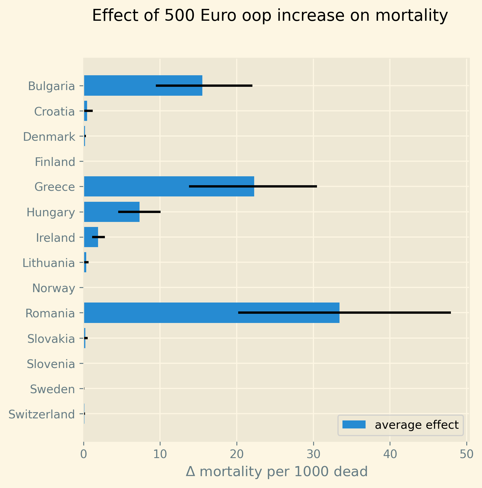
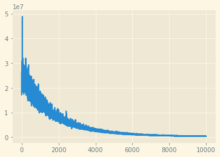

The health effects of demand side cost sharing in European health insurance
Table of Contents
The rationale for demand side cost sharing in health insurance is to deter patients from using low value care. But if agents are cash constrained, demand side cost sharing can lead them to postpone or forgo valuable treatments. We use data on European (NUTS 2) regions to show that the interaction between poverty rate and out-of-pocket payments leads to unmet medical needs and higher mortality.
JEL codes: I11, I13, I18
Keywords: out-of-pocket payments, mortality, health insurance, poverty, unmet medical needs
How does this work? code
With this document, any reader can retrace the code which we used to produce the results, figures, tables etc. for this paper.
This file is written in Emacs org mode which allows us to combine text and code. The file is exported to pdf (via latex) and to html for the web-version. The web-version –which you are reading now– contains the sections tagged code which are not exported to the pdf version of the paper.
Here you can download the pdf of the paper.
For the export to html we use LaTeX.CSS with some small tweaks to make it compatible with the org-exporter that we use which is based on org-ref. The export of the org file to html is almost perfect, but some issues are not yet resolved. To illustrate, the html export has trouble with latex environments like align, split in equations etc. For the time being this is resolved by using multiple equation environments. Further, whereas latex drops the label on equations that are not cited, the html exporter is not able to do this. Hence, there are more numbered equations in the web-version of the paper. This is all a bit clumsy but otherwise works fine.
We use Python to program the model and PyMC for the Bayesian analysis. All these resources are open source and freely available. If you want to install Python, Anaconda is a good place to start.
There is a separate file which describes how we get the data from Eurostat.
The repository itself can be found here.
preamble code
import xarray as xr import numpy as np import pymc as pm import aesara.tensor as at import aesara import pandas as pd import arviz as az import scipy as sp import seaborn as sns import matplotlib.pyplot as plt plt.style.use('Solarize_Light2') from country_codes import eurostat_dictionary from tabulate import tabulate
loading data
We read in the data. We drop rows (combination of calendar year, NUTS 2 region, age and gender) where mortality measures (deaths, population or lagged_mortality) or oop (HF3_PC_CHE) and fraction of population that postponed treatment because it was too expensive (TOOEXP) are missing.
We select ages between age_min and age_max and calendar years between first_year and last_year. We drop rows where the number of deaths during a year exceeds the population at January 1st in that age-gender-year-region category.
The file file:./getting_data.org in this repository provides the code for downloading the relevant data from the Eurostat website.
age_min = 35 age_max = 85 age_range = np.arange(age_max-age_min+1)[:,np.newaxis] plot_age = np.arange(age_min,age_max+1) first_year = 2009 last_year = 2019 df = pd.read_csv('./data/data_deaths_by_age_nuts_2.csv') df['poverty'] = df['at risk of poverty'] df['deprivation'] = df['percentage_material_deprivation'] df.dropna(subset=['deaths','population', 'TOOEXP',\ 'HF3_PC_CHE','lagged_mortality'], axis=0, how ='any',inplace=True) df = df[(df.population > df.deaths) & (df.age >= age_min) & \ (df.age <= age_max) & (df.year <= last_year) &\ (df.year >= first_year)] df['mortality'] = df.deaths/df.population*100 \ # mortality as a percentage # lagged mortality as fraction of mean lagged mortality # per age/gender group df['lagged_mortality_s'] = (df['lagged_mortality'])/\ df.groupby(['age','sex'])['lagged_mortality'].\ transform('mean') df['unmet'] = df['UNMET'] len(df)
52612
1. Introduction
Most developed economies face rising healthcare expenditures. In many countries the healthcare sector grows faster than the economy as a whole (OECD 2021). One of the instruments that governments have to curb this expenditure growth is demand side cost sharing. The effect of demand side cost sharing on healthcare utilization is well known. As cost sharing increases, healthcare becomes more expensive for the individual and demand for treatments falls. It is less clear whether and to which extent demand side cost sharing induces people to forgo low value care only (Newhouse and the Insurance Experiment Group 1993; Schokkaert and van de Voorde 2011).
The traditional view is that health insurance subsidizes health consumption thereby inducing people to get (expensive) treatments with small health benefits. Economists tend to refer to this as moral hazard. As the social costs (in contrast to an individual's out-of-pocket –oop– expenditure) of such treatments exceed their value (utility gain), an increase in demand side cost-sharing that reduces moral hazard is seen as welfare enhancing. The traditional trade off is between this increase in efficiency (due to reduced moral hazard) and the increased oop risk faced by a risk averse agent.
Here we focus on behavioral hazard which refers to the case where cost-sharing leads patients to forgo valuable treatments (Baicker, Mullainathan, and Schwartzstein 2015). If a patient decides to skip a treatment where value exceeds costs then social welfare is reduced. In this paper, we concentrate on the case where people skip or postpone treatment because it is too expensive.
The goal of this paper is to develop a simple model that can be estimated with aggregate data to identify whether demand side cost sharing has negative health effects. In particular, we are interested in the mechanism where demand side cost sharing reduces health because valuable treatments become too expensive. We start from the following two ideas. First, if demand side cost sharing reduces valuable healthcare by making it (too) expensive, this effect will be stronger for people on low income. Health is a normal good and people with high (enough) income pay for valuable treatments even if they become expensive in terms of oop expenditure. Low income can force a patient to postpone or forgo treatment due to liquidity constraints. Second, if there is a substantial demand reduction for high value care, we should be able to detect this in aggregate mortality statistics.

Figure 1: Mortality in NUTS 2 regions in Europe
To identify the health effects of cost-sharing we use mortality statistics of Eurostat at the NUTS 2 (Nomenclature of Territorial Units for Statistics) regional level. Figure 1 illustrates NUTS 2 regions used in this paper. Mortality varies by region/year/age/sex. In regions where the percentage of people on low income is high and demand side cost sharing is high, we expect to see high mortality. Since we have panel data, we control for NUTS 2 fixed effects.
Measuring the generosity of a health insurance system is non-trivial. Systems tend to combine coinsurance with health expenditure caps, like a deductible. This leads to non-linearities in the oop price of healthcare. To address this, we introduce a model that links observed variables related to mortality, poverty, oop expenditures and people forgoing treatment because it is too expensive. The combination of the model and these variables allows us to identify the mechanism from reduced health insurance generosity via poverty to people forgoing treatment thereby raising mortality.
Figure 2 summarizes our main results in the following way. For each country in our data, we consider the NUTS 2 region where poverty is highest and therefore the effect likely to be the strongest at the regional level. Using the estimated model, we simulate the effect of a 500 euro increase in oop on mortality. We report this effect as the increase in deaths (due to the increase in oop) per 1000 dead. The motivation for this measure is two-fold. First, mortality is –thankfully– low and hence the effect of a change in oop on mortality is going to be (very) small. Reporting the increase in mortality per 1000 dead helps to interpret the numbers. Below we also present this measure for diseases that have similar orders of magnitude, like pneumonia. Second, in our model this measure (per 1000 dead) is age-independent. That is, the number of people dying due to an increase in oop varies with age (as 25 year olds are less likely to die than 80 year olds). But the fraction of people dying due to the oop increase as a fraction of the total number of deceased is the same across age (and gender). This formulation reduces the number of parameters that we need to estimate and fits the data rather well.
The blue bars indicate the average simulated effect of the 500 euro increase for this region within each country; the black lines indicate the 95% probability interval of the effect. The four countries with the biggest effects –Bulgaria, Greece, Hungary and Romania– have the highest poverty levels in our sample. For these countries we can easily see that the 95% probability interval of the effect is bounded away from 0. For the Scandinavian countries, Slovenia and Switzerland the effects are close to zero at the region level because poverty is very low (even in the NUTS 2 region with highest poverty level per country). Another potential reason for small simulated effects is a government scheme targeted at the poor helping to finance healthcare expenditures. The poor then face lower oop than our country wide oop variable would suggest.

Figure 2: Increase in number of deaths per 1000 dead due to a 500 euro increase in oop for the region in each country where poverty is highest.
The results suggest the following policy implications. An increase in oop has a measurable/significant effect on mortality in regions where poverty is high. Policies to address this include a scheme that subsidizes healthcare expenditure (on top of health insurance) for poor people; e.g. through means-tested cost-sharing. A downside of such a targeted intervention is a higher marginal tax rate at low income levels contributing to a poverty trap. Indeed, if by earning more, the oop subsidy falls, the increase in net income is reduced. This makes such an increase in income less attractive. Alternatively, a government can introduce co-payments that vary with the cost-effectiveness of the treatment. Treatments with high value added would then feature a low co-payment to prevent people from postponing valuable care. This can also help to reduce mortality associated with cost sharing (Chernew et al. 2008).
This is not the first paper to consider the effects of demand side-cost sharing on mortality. There is a string of recent papers using innovative methods and (mostly) individual level data to identify the causal effect of health insurance on health and mortality. There are a number of issues when identifying this effect of health insurance on health and mortality using individual level data. First, mortality is a rare event at most ages. Hence, identifying the effect is difficult, especially if the changes in oop are small. Second there is the selection effect that people with low health status tend to buy (generous) health insurance (as they expect high expenditure). This can bias results in the direction that individuals with (generous) insurance tend to have adverse health outcomes (e.g. high mortality). Moreover, cost-sharing tends to be non-linear with e.g. a cap on expenditures that have to be paid oop as with a deductible. In this case, people with high care use tend to face low (marginal) treatment prices; for example, because they filled up their deductible. As low health status is likely to increase care use, people facing low marginal prices (suggesting generous insurance) are likely to have experienced adverse health outcomes.
A number of papers use the Medicaid eligibility expansion of the Affordable Care Act which was introduced in different US states at different times. This allows for a diff-in-diffs identification strategy. Using individual level data, these papers have shown that the Medicaid expansion (more generous health insurance coverage) reduced mortality (Borgschulte and Vogler 2020; Miller, Johnson, and Wherry 2021). Other papers, focusing on particular causes of death, find similar results: the Medicaid expansion was associated with lower cardiovascular mortality in middle-aged adults (Khatana et al. 2019) and lower 1-year mortality among patients with ESRD initiating dialysis (Swaminathan et al. 2018).
Others analyze Medicare part D prescription drug coverage where the end-of-year price is non-linear in expenditure. One paper uses enrollment month (related to birth month) to get exogenous variation in end-of-year expenditure for people aged 65 (Chandra, Flack, and Obermeyer 2021). The main finding is that increases in the oop costs of drugs, reduce drug use including use of high value treatments. This, in turn, raises mortality. Another approach is to show that the implementation of Medicare Part D increased the use of drug treatments for cardiovascular disease which reduced mortality (Huh and Reif 2017). By using exogenous exit of plans in the Medicare Advantage market to control for endogeneity problems, it is possible to show that more generous prescription drug coverage leads to lower mortality (Abaluck et al. 2020).
Finally, Goldin and coauthors use an experiment where a subset of people who should buy health insurance under the Affordable Care Act were reminded that they would face a financial penalty if they did not comply. This reminder tended to induce people to buy insurance instead of remaining uninsured (Goldin, Lurie, and McCubbin 2020). Mortality turns out to be lower among the people who received the reminder compared to the control group who were not reminded in this way.
Compared to these papers on health insurance (generosity) and mortality, our paper differs along the following lines. First, we use European instead of US data. The advantage is that within a European country health insurance is more homogeneous than in the US. Within a US state or county, people may have generous employer sponsored insurance, benefit from Medicaid or Medicare or have no insurance at all. Hence, a change in Medicaid coverage may have no detectable effects at the aggregate level (while an effect can be found with individual level data). In European countries a number of health insurance features are determined nationally. Consider the first two rows of the OECD Health Systems Characteristics Survey (https://qdd.oecd.org/data/HSC) showing the share of the population obtaining basic primary health care coverage through automatic or compulsory insurance coverage. For all European countries this is above 90% and for most 99% or 100%. For the US this is less than one third. Hence, country or region wide statistics in Europe give a better picture of the situation applying to most citizens in that region than in the US.1
Moreover, individual level data sets tend to be within a country not across countries. But the variation in oop across countries tends to be bigger than within a country. Hence, across country data –although aggregated at the region level– helps us to identify the effect of oop on health and mortality.
Second, we show that mortality is high in regions where both oop and poverty are high. This follows the literature showing that healthcare consumption is liquidity sensitive (Gross, Layton, and Prinz 2020; Nyman 2003). People on low income tend to postpone or forgo valuable treatments if these are expensive. This focus on low incomes can imply that we under-estimate the mortality effect of cost-sharing if higher incomes also forgo valuable treatments due to oop (Brot-Goldberg et al. 2017; Chandra, Flack, and Obermeyer 2021). This is then not so much caused by liquidity problems but by other forms of behavioral hazard. In this sense, the results below are a lower bound on the mortality effects of cost-sharing.
Third, we use the regional structure of the Eurostat data. We analyze the effects of our oop variable times poverty interaction on mortality per age-gender class at the NUTS 2 regional level. This helps to solve the following potential endogeneity issue. A country with a population that has low health status (across ages), decides to have, say, generous health insurance to help people improve their health. This causal effect is in the opposite direction from the one we are interested in. We avoid this problem by considering within a country how health per region varies with oop and poverty, while using NUTS 2 fixed effects to correct for other factors affecting health. By analysing health/mortality per age cohort, our results are not affected by a country's or region's age distribution. By filtering out these other effects we mitigate power issues associated with the use of mortality data at the regional level (Black et al. 2021).
Fourth, Eurostat variables based on the EU-SILC survey allow us to zoom in on the relevant causal mechanism. This survey asks people whether they had unmet medical needs in the past months and if so the reason for the unmet needs. One of the answers is that treatment was postponed or skipped because it was too expensive. This allows us to simultaneously estimate the fraction of people in a NUTS 2 region that forgo treatment because it is too expensive and the effect of unmet medical needs on mortality. In this way, we capture that in regions where the oop \(\times\) poverty interaction is high, more people postpone treatment because it is too expensive and these unmet medical needs raise mortality in the region.
Finally, our focus on the oop \(\times\) poverty interaction distinguishes our paper from the literature on the effect of income and wealth on health (Chetty et al. 2016; Mackenbach et al. 2008; Semyonov, Lewin-Epstein, and Maskileyson 2013) where papers use cross country data. This literature typically finds that lower income and wealth is associated with lower health status, although the causal mechanism is not clear (Cutler, Lleras-Muney, and Vogl 2011). Two possible mechanisms are that higher income leads to more expenditure on treatments (normal good) and therefore better health. Alternatively, healthier people are more productive and earn higher incomes. The combination of fixed effects and the use of the survey question on unmet medical needs allows us to zoom in on the mechanism where high oop \(\times\) poverty interaction leads to unmet medical needs and hence to low health status and high mortality.
In this way, our approach does not suffer from the endogeneity problem with individual level data discussed above where low health status is correlated with generous insurance (at the margin). In our data, the unit of observation is a gender/age category at the regional level. The health status of such a unit, has (almost) no effect on our country wide oop variable.
Summarizing, compared to papers using individual level data our approach is more broad brush and less precise in estimating the size of the effect of insurance generosity on mortality. To illustrate, we do not determine the mortality effect of a 1% change in a deductible. We estimate the mortality effect of a 500 euro increase in oop. We do not have data on the oop details of each country's health insurance system, like what is the coinsurance rate for different types of treatments, which treatments are exempt from oop etc. Even if we had such detailed institutional data, it is not obvious how one would summarize the different systems in a way that makes them comparable across countries. Instead we use the fraction of oop payments in total healthcare expenditure, OOP, as a summary measure of a health insurance system's generosity. The theory section derives that OOP and the fraction of people postponing treatment because it is too expensive are parametric functions of the underlying "generosity parameters" coinsurance rate and deductible level. This derivation allows us to interpret the relation between OOP and mortality.
Although results based on aggregate data are less precise than those based on individual level data, our approach is more robust in the sense that it applies across a number of countries instead of a particular sub-population (like 65 year old Medicare users in the US). Although we do interpret our results using the size of the effect, our main goal is to establish that an increase in OOP in a poor region increases mortality. In particular, we quantify how sure we are that this effect is positive.
The next section presents a model explaining the relationship between the variables mortality, poverty, OOP and the fraction of people forgoing treatment because it is too expensive. Then we describe the Eurostat data that we use. We explain the empirical model that we estimate. Estimation results are presented for the baseline model and we show that these are robust with respect to a number of our modeling choices. We conclude with a discussion of the policy implications. The appendix contains the proofs of our results and more details on our data and estimation results. The online appendix is the html version of this paper which includes –per section– the python code that is used in each section's analysis.2 This is a final advantage of using data at the regional level. The repository contains the python code that gets the data from Eurostat so that each step of this analysis can be replicated. Most individual level data sets cannot be freely shared.
1.1. Map code
As we use a different python kernel here from the one used in the rest of the paper (due to conflicting supporting packages at the time of the analysis), we need to import some libraries and the data again. We use geopandas to plot the map of the NUTS 2 regions where the color indicates mortality per 100k population.
import numpy as np import geopandas as gpd import matplotlib.pyplot as plt plt.style.use('Solarize_Light2') import pandas as pd # import altair as alt
# read the NUTS shapefile and extract # the polygons for a individual countries nuts=gpd.read_file('./SHP/NUTS_RG_60M_2021_4326_LEVL_2.shp') age_min = 35 age_max = 85 plot_age = np.arange(age_min,age_max+1) first_year = 2009 last_year = 2019 df = pd.read_csv('./data/data_deaths_by_age_nuts_2.csv') df.dropna(subset=['deaths','population', 'TOOEXP',\ 'HF3_PC_CHE','lagged_mortality'], axis=0, how ='any',inplace=True) df = df[(df.population > df.deaths) & (df.age >= age_min) & \ (df.age <= age_max) & (df.year <= last_year) &\ (df.year >= first_year)] df['mortality'] = df.deaths/df.population*100000 df = df[(df.year==2018) & (df.age==40) & (df.sex=='F')] nuts = nuts.to_crs(epsg=3035) nuts['centroids'] = nuts.centroid nuts = nuts.merge(df, how='inner',\ left_on = 'NUTS_ID', right_on = 'nuts2')
nuts[nuts.sex=='F'].plot(column='mortality', legend=True, figsize=(16,16), # vmin = 71, vmax = 0.002*100000, missing_kwds={'color': 'lightgrey'}, legend_kwds={'label': "Mortality rate", 'orientation': "vertical"}) # adjust plot domain to focus on EU region plt.xlim(0.25e7, 0.6e7) plt.ylim(1.3e6, 5.5e6) plt.xticks([],[]) plt.yticks([],[]) plt.title(\ 'Mortality 40 year old females in 2018 (per 100,000 population)'); # plt.tight_layout() # plt.legend('right');
2. Theory
The relevant variables in our data are mortality per region/year/age/sex category, OOP measuring the percentage of healthcare expenditure paid out-of-pocket (oop), the poverty rate and the fraction of people per region postponing or forgoing treatment because it is too expensive. We introduce a model to explain how these variables are related.
Consider a population (of a certain age and gender) in an EU region where a fraction \(\alpha \in \langle 0,1 \rangle\) has low income \(l\) and fraction \(1-\alpha\) high income \(h\). Let \(\pi^j\) denote the probability that someone with income \(j=l,h\) falls ill. As is well known, low income people tend to have a lower health status (Cutler, Lleras-Muney, and Vogl 2011). We capture this by assuming \(\pi^l > \pi^h\). People on low income may have a less healthy diet, exercise less etc. due to either the cost of or knowledge about healthy lifestyle choices. This makes it more likely that they fall ill.
Generally speaking, oop payments tend to take two forms that we want to capture: a coinsurance rate, which we denote \(\xi \in [0,1]\), and a maximum expenditure, which we denote \(D\) (for deductible). Some systems have a combination of the two.
Conditional on falling ill, there is a probability \(\zeta_i \in [0,1]\) that the patient is advised to get treatment \(i\) at cost \(x_i\) for \(i\) in the set of "illnesses" \(I\). We define \(I_{\xi}\) as the subset of \(I\) where \(\xi x_i < D\) and \(oop_i = \xi x_i\) and set \(I_D\) where \(\xi x_i \geq D\) and \(oop_i = D\). To keep things simple, we assume that \(\zeta_i\) is exogenous to the patient. We model the treatment decision on the extensive margin only: an agent accepts or rejects the treatment proposed by a physician.3 A pure coinsurance system has \(\xi < 1\) and \(I_{\xi}=I\). A pure deductible system \(\xi=1\) and \(I_D\) non-empty. A combination of the two has \(\xi<1\) and there is a maximum on the oop payment. Health insurance systems in Europe tend to have such maximum oop expenditure.4 An increase in either \(\xi\) or \(D\) is interpreted as making health insurance less generous.
Whereas with individual level data one can determine whether an individual faces a positive treatment price at the margin (E.g. using the end-of-year price as in Keeler, Newhouse, and Phelps 1977; Ellis 1986), this is not possible with the aggregate data that we use here. Hence, we rely on an aggregate summary variable, denoted OOP, measured as oop payments over total healthcare expenditure. That is, the fraction of healthcare expenditure paid by patients oop. We interpret this variable as capturing the generosity of the health insurance system. To illustrate, if healthcare is free at point of service, OOP equals zero; if there is no health insurance at all, OOP equals 1. In a pure coinsurance system with rate \(\xi\) applying to all treatments, OOP equals \(\xi\). It is the cap on oop expenditure (like a deductible) that complicates the relation between OOP and healthcare use. The challenge then is to capture changes in \(\xi\) and \(D\) although we do not directly observe these variables in the data. This is what the model sets out to do.
If a patient receives treatment \(i \in I\), we denote her (expected) health \(\sigma_i\), while without treatment (expected) health equals \(\sigma_0\) with \(0 \leq \sigma_0 < \sigma_i \leq 1\).5 Health is normalized at value one for a patient who does not fall ill. The trade off between health and oop is captured by \(\sigma_0/\sigma_i <1\) and we simply assume that utility is multiplicative in health and consumption. That is, consumption yields higher utility if you are healthier. We model the patient's treatment decision as:
\begin{equation} \label{org7138fee} \nu \sigma_i u(y^j-oop_i) > \sigma_0 u(y^j) \end{equation}where utility \(u(.)\) is determined by how much money can be spent on other goods: income \(y^j\) minus oop in case of treatment and \(y^j\) if no treatment is chosen. The utility function \(u(.)\) is increasing and concave in consumption: \(u(.), u'(.) >0\) and \(u''(.) < 0\). Further, parameter \(\nu\) captures other factors than pure financial ones affecting a patient's treatment choice.6
In our data, we have a variable "unmet medical needs" based on a number of motivations: treatment is too far away to travel to, there is a long waiting list, the patient is scared to undergo treatment etc. To make our point, it is enough to assume that such factors affect utility in a simple multiplicative way. To illustrate, if the patient has to travel far for treatment, utility is reduced by multiplying it with a value of \(\nu < 1\). Agents differ in \(\nu\) and the cumulative distribution function of \(\nu\) is given by \(G(\nu)\) and its density function by \(g(\nu)\). Other factors can include waiting time till treatment, belief that the condition will resolve itself without intervention, poor decision making e.g. with a focus on the short term thereby undervaluing the benefit of treatment. If inequality \eqref{org7138fee} holds, the agent accepts the treatment. For some proofs in the appendix it is convenient to assume that \(G\) is a Pareto distribution.
The probability that a patient with income \(y^{j}\) accepts treatment \(i\) offered by a physician equals
\begin{equation} \label{orgdf27748} \delta_i^j = 1-G\left( \frac{\sigma_0}{\sigma_i} \frac{u(y^{j})}{u(y^{j}-oop_i)} \right) \end{equation}that is, \(\nu\) is big enough that inequality \eqref{org7138fee} holds. With probability \(G\left( \frac{\sigma_0}{\sigma_i} \frac{u(y^{j})}{u(y^{j}-oop_i)} \right)\) the patient decides to postpone or forgo treatment \(i\).
The probability that a patient postpones or skips a treatment because it is too expensive is given by
\begin{equation} \label{orgb7a8ac7} G\left( \frac{\sigma_0}{\sigma_i} \frac{u(y^{j})}{u(y^{j}-oop_{i})} \right) - G\left( \frac{\sigma_0}{\sigma_i} \right) \end{equation}These are agents \(\nu\) that would have chosen treatment \(i\) if it were free (\(oop_{i}=0\) and \(u(y^j)/u(y^j-oop_i)=1\)) but who forgo treatment now that it costs \(oop_{i}>0\). The probability \(G(\sigma_{0}/\sigma_{i})\) captures factors like waiting lists or the patient hoping that the health problems resolve themselves without treatment. That is, reasons for postponing treatment not related to oop payments.
In the proof of the lemma at the end of this section, we show that the probability of accepting treatment, \(\delta_i^j\), is increasing in income \(y^j\) and decreasing in \(oop_{i}\), as one would expect.
Note that this model differs from a standard Rothschild and Stiglitz –R&S– health insurance model (Rothschild and Stiglitz 1976) in the following way. In an R&S model income plays no role and people with low health status have generous insurance coverage. Hence, they would not postpone valuable care. In our model, people with low health tend to have low income and may skip valuable treatment if the oop expense is high. This negatively affects their health.
An agent's health is affected by the probability of falling ill and then getting treatment (or not). We assume that agents' mortality is affected by health in the following way, where we define mortality \(m\) as the probability of dying in a given period.
\begin{equation} \label{orgae11a42} \ln(m_{agt}) = \ln({\eta}_{ag}) + \gamma \ln \left( \frac{m_{a-1,g,t-1}}{\bar m_{a-1,g}}\right) - (\alpha (1-\pi^l) + (1-\alpha) (1-\pi^{h})) \end{equation} \begin{equation*} - \alpha \pi^l \sum_{i \in I} \zeta_i (\delta_i^l \sigma_i + (1-\delta_i^l)\sigma_0) - (1-\alpha) \pi^h \sum_{i \in I} \zeta_i (\delta_i^h \sigma_i + (1-\delta_i^h) \sigma_0) \end{equation*}where we use the following subscripts: age \(a\), gender \(g \in \{f,m\}\), calendar year \(t\). In words, log mortality in a region depends on the biology of age and gender, \(\eta_{ag}\). As people get older, they tend to become less healthy and are more likely to die. We define this effect as independent of country or year (in the period that we analyze). Then there are a number of effects that increase or decrease mortality in a region compared to \(\eta_{ag}\).
The health of the age-gender cohort in the previous period: if in a NUTS 2 region there was a shock in \(t-1\) –when this cohort was aged \(a-1\) – that increased mortality above the average (across years and regions) mortality for this cohort, we interpret this as a negative health shock. For the people that survived in this cohort in this region, this health shock can affect their mortality in period \(t\). This is captured by the coefficient \(\gamma\).7
People who do not fall ill \((\alpha(1-\pi^l)+(1-\alpha)(1-\pi^h))\), have the highest health level (normalized to 1) and hence reduce mortality to the biggest extend. People who do fall ill with \(i\) and get treatment (\(\alpha \pi^l \zeta_i \delta_i^l\) and \((1-\alpha)\pi^h \zeta_i \delta_i^h\)), get health \(\sigma_i \leq 1\) and reduce mortality to a smaller extent. Finally, people falling ill but forgoing treatment lead to the smallest reduction \(\sigma_0\) in mortality.
As we show in the proof of the lemma below, we can write the expression for log mortality as:
\begin{equation} \label{org3dd0d6e} \ln(m_{ag2t}) =\ln ( \eta_{ag}) + \mu_2 + \gamma \ln \left( \frac{m_{a-1,2,g,t-1}}{\bar m_{a-1,g}}\right) + \beta_{poverty}\alpha_{2t} + \beta_{unmet}\text{Unmet}_{2t} \end{equation}
where subscript \(2\) indicates that the variable varies with NUTS 2 region, \(\mu_2\) denotes NUTS 2 fixed effects, poverty \(\alpha\) varies with NUTS 2 region and calendar year and Unmet denotes the fraction of people indicating unmet medical needs in a region in year \(t\).
In our data, the variable Unmet varies with NUTS 2 region and year and not by age or gender. Hence, in terms of our model, we define this variable as follows:
with treatment probability \(\delta^j_i\) varying with country \(c\) and year \(t\) because oop varies with countries over time.
Further, in our data we have the variable OOP defined as oop payments as a percentage of healthcare expenditure. In terms of our model, we write this as
where \(\zeta_i (\alpha \pi^l \delta^l_i + (1-\alpha) \pi^h \delta^h_i)\) denotes the fraction of people accepting treatment \(i\). The numerator of OOP contains the oop payments \(oop_{i}\) and the denominator expenditures \(x_i\). If \(I_{\xi} = I\), it is clear that \(\text{OOP} = \xi\). Because \(I_D\) is non-empty (European countries have a maximum oop payment), the expression for OOP is actually non-trivial. We can also write OOP as the ratio of average oop per head and average healthcare expenditure per head:
In our data these variables vary by country and year.
Finally, using equation \eqref{orgb7a8ac7} our model allows us to formalize the fraction of people that forgo treatment because it is too expensive: fraction of poor people who need treatment, \(\alpha \pi^l\), forgoing treatment because it is too expensive plus the fraction of rich people, \((1-\alpha)\pi^h\), forgoing treatment for this reason:
\begin{equation} \label{org040d6f1} \text{TooExp} = \alpha \pi^l (\sum_{i \in I}\zeta_{i} \left(G\left( \frac{\sigma_0}{\sigma_i} \frac{u(y^{l})}{u(y^{l}-oop_{i})} \right) - G\left( \frac{\sigma_0}{\sigma_i} \right) \right ) \end{equation} \begin{equation*} + (1-\alpha) \pi^h (\sum_{i \in I}\zeta_{i} \left(G\left( \frac{\sigma_0}{\sigma_i} \frac{u(y^{h})}{u(y^{h}-oop_{i})} \right) - G\left( \frac{\sigma_0}{\sigma_i} \right) \right ) \end{equation*}
In our data, TooExp varies with Nuts 2 region and year. The following lemma summarizes the main results from the model and presents the equations that we estimate below. The innovation is to view equations \eqref{orgbdcdaa6} and \eqref{org040d6f1} as being parametrized by the underlying parameters \(\xi\) and \(D\) which are not directly observed in our data. We prove that this leads to an equation where TooExp is a function of OOP and poverty.
Healthcare demand \(\delta = 1-G(.)\) is increasing in income \(y^j\) and decreasing in \(oop_i\) (\(\xi\) or \(D\)). We write the expression for gender g mortality of age cohort a in Nuts 2 region 2 at time t as:
\[
m_{ga2t} = \frac{e^{\beta_{ag}}}{1+e^{\beta_{ag}}} e^{\left( \mu_2 + \gamma \ln \left(\frac{m_{a-1,g,2,t-1}}{\bar{m}_{a-1,g}}\right)+ \beta_{poverty}\text{Poverty}_{2t} + \beta_{unmet}\text{Unmet}_{2t}\right)}
\]
where \(\beta_{poverty}, \beta_{unmet} > 0\). The linear expansion of TooExp with respect to OOP can be written as
\[
\text{TooExp}_{2t} = b_{0,2} + b_{0,t} + \text{OOP}_{ct} \bar{x}_{ct} \left( b_{oop,c} + b_{interaction,c} \text{Poverty}_{2t} \right)
\]
We model \({\eta}_{ag}\) as a sigmoid of age and gender fixed effects, \(\beta_{ag}\). This makes sure this part of the probability of death is between 0 and 1. We multiply this baseline probability with a multiplier capturing the other effects. In particular, NUTS 2 region fixed effects which capture regional variation in the probability of falling ill. Whether this age cohort experienced a health shock in the previous period. Poverty level and the fraction of people with unmet medical needs in the region in year \(t\). If the sum of these terms is negative, the multiplier is less than 1 and mortality for this gender/age/region/year combination is reduced compared to the baseline probability given by the sigmoid. If the sum of the terms is positive, mortality for this observation is higher than the baseline probability.
We use a linear expansion of TooExp in terms of OOP. The appendix shows how we derive this relation using the policy variables \(\xi\) and \(D\) which affect OOP and TooExp simultaneously. It turns out that there is a direct effect of OOP on TooExp and an interaction effect with the fraction of people below the poverty line in a region. We show that \(b_{oop},b_{interaction} > 0\): a region that lies in a country with high OOP tends to have high unmet needs and especially so if the region features a high poverty rate. As explained in the proof of the lemma, the linear expansion of TooExp in OOP and OOP \(\times\) Poverty interaction does not determine the intercept \(b_{0}\). Therefore, we allow \(b_0\) to vary by region and year: \(b_{0,2} + b_{0,t}\).
Figure 3 illustrates this approximation of the relation between (log-odds) TooExp and OOP for simulated values in the model above. We simulate data for a country with varying values for \(\xi\) and \(D\). Then both OOP and expenditure per head vary leading to the graph in the left panel of Figure 3 (see web appendix for details). For this simulated data, the approximation where the (log odds of) fraction of people forgoing treatment because it is too expensive depends linearly on OOP \(\times\) Poverty seems reasonable. As shown in the proof of the lemma, we need to multiply OOP and OOP \(\times\) Poverty by healthcare expenditure per head because the underlying changing variable is not the endogenous OOP but the parameters \(\xi\) and \(D\). As illustrated in equation \eqref{orgbdcdaa6}, the relation between changes in \(D\) and OOP is multiplied by expenditure per head: \(d \text{OOP}/d D \propto 1/\bar{x}_{ct}\).

Figure 3: The simulated relation between fraction of people who forgo treatment because it is too expensive and OOP measure for different values of \(\xi\), \(D\) (left panel) and this relation for NUTS 2 regions and years in Romania (right panel).
The right panel of Figure 3 illustrates this relation for regional data from Romania. Again a linear approximation looks reasonable. The size of the dots indicates the level of OOP for that observation. To identify the colors for the different Romanian regions, a color version of the pdf (or the website) is useful.
2.1. parametric function code
This section illustrates with two figures the relation between the fraction of people with unmet medical needs due to financial constraints, TooExp, and our variable measuring how generous a health insurance system is, OOP. We illustrate this using data simulated from the model and for one country, Romania, in our data set.
As we assume that TooExp has a logit-normal distribution, we plot the log-odds of TooExp both for Romania and for our simulated data.
We plot these log-odds on the vertical axis and the interaction term OOP*Poverty on the vertical axis.
df_RO = df[df.country=='Romania'] df_RO['OOP'] = df_RO['HF3_PC_CHE']/100 df_RO['interaction'] = df_RO['HF3_PC_CHE']*\ df_RO['deprivation']/(100*100) df_RO['tooexp'] = df_RO['TOOEXP']/100 df_RO['tooexp_lo'] = np.log((df_RO['TOOEXP']/100)/\ (1-(df_RO['TOOEXP']/100)))
We use our model to simulate this parametric relation between TooExp and OOP*Poverty by varying the underlying exogenous parameters \(\xi\) and \(D\). As this is just used as illustration, we specify simple/straightforward functions for utility \(u\) and cumulative distribution function \(G\).
α = 0.2 ζ = 0.25 x1 = 5000 x0 = 400 σ_x = 0.8 σ_0 = 0.3 π_l = 0.3 π_h = 0.1 y_h = 20000 y_l = 3000 def u(y): return np.sqrt(y) def G(y,oop): return 1-np.exp(-1*(σ_0/σ_x * u(y)/u(y-oop))) def oop(ξ,D,y): return (ζ*ξ*(1-G(y,ξ*x0))*x0+(1-ζ)*(1-G(y,D))*D) def expend(ξ,D,y): return (ζ*(1-G(y,ξ*x0))*x0+(1-ζ)*(1-G(y,D))*x1) def Expend(ξ,D,α,π_l): return α*π_l*expend(ξ,D,y_l)+(1-α)*π_h*expend(ξ,D,y_h) def OOP(ξ,D,α,π_l): return (α*π_l*oop(ξ,D,y_l)+(1-α)*π_h*oop(ξ,D,y_h))/\ Expend(ξ,D,α,π_l) def TooExp(ξ,D,α,π_l): return α*π_l*(ζ*(G(y_l,ξ*x0)-G(y_l,0))+\ (1-ζ)*(G(y_l,D)-G(y_l,0)))+\ (1-α)*π_h*(ζ*(G(y_h,ξ*x0)-G(y_h,0))+\ (1-ζ)*(G(y_h,D)-G(y_h,0))) range_D = np.arange(500, 2500,75)[:,None] range_ξ = (np.arange(0.4,1.00,0.1))[None,:] Y1 = TooExp(range_ξ,range_D,α,π_l).flatten()+\ np.random.normal(0,0.0015,size=range_D.shape[0]*range_ξ.shape[1]) Y1_lo = np.clip(np.log(Y1*10/(1-Y1*10)),-5.0,1) oop_1 = OOP(range_ξ,range_D,α,π_l).flatten() X1 = oop_1*α Z1 = Expend(range_ξ,range_D,α,π_l).flatten()*X1 plt.style.use('Solarize_Light2') fig, (ax1,ax2) = plt.subplots(1, 2, sharex=True,\ sharey=True,dpi=140,figsize=(14,6)) fig.suptitle('Relation between OOP $\\times$ Poverty and TooExp') ax1.scatter(X1,Y1_lo,s=oop_1*90) ax1.set_xlabel('OOP $\\times$ Poverty') ax1.set_ylabel('log odds TooExp') ax1.set_title('Simulated data') ax1.set_ylim(-4.5,-1.5) fig2 = sns.scatterplot(ax=ax2,data = df_RO, \ x = 'interaction',y='tooexp_lo',\ hue='nuts2',size='OOP') fig2.set(xlabel = 'OOP $\\times$ Poverty', \ ylabel = 'TooExp', title = 'Romania');
/tmp/ipykernel_136527/144876270.py:36: RuntimeWarning: invalid value encountered in log Y1_lo = np.clip(np.log(Y1*10/(1-Y1*10)),-5.0,1)
3. Data
The data that we use is from Eurostat's regional database and provides for NUTS 2 regions population size and number of deaths per age-gender category. In principle, we have data on 14 countries and 78 NUTS 2 regions for the years 2009-2019, ages 35-85 for women and men. The years 2009-2019 were chosen because, at the time of the analysis, data on poverty was available from 2009 onward and data on the number of deaths ran till 2019. We start at age 35 because at ages below 35, mortality is so low that there is hardly a difference between mortality in regions with different poverty levels (see Figure 4 below). For ages above 85 population numbers per region get rather low. We drop NUTS 2 region-year combinations where for an age-gender category –due to reporting issues or people moving– the number of deaths in a year exceeds the population size at the start of the year. For the baseline analysis, we focus on observations where we have complete records on mortality, the fraction of people indicating they postponed treatment because it was too expensive and oop expenditure. We come back to this in the robustness analysis where we estimate the model including observations with missing values.
Table 1 shows the summary statistics for our variables. We have more than 50k observations.8 The average population size per region-age-gender category is about 7500 and the average number of deaths 100. Median population size per category equals 6500 and median number of deaths 56. In our data, the percentage of people dying in a NUTS 2/year/age/gender category (mortality) equals 2% on average with a maximum of 20% for some region and age combination.
| count | mean | std | min | median | max | |
|---|---|---|---|---|---|---|
| population | 52612.00 | 7491.28 | 4805.28 | 440.00 | 6477.00 | 36117.00 |
| deaths | 52612.00 | 103.19 | 126.49 | 0.00 | 56.00 | 1033.00 |
| mortality | 52612.00 | 2.12 | 2.94 | 0.00 | 0.81 | 20.72 |
| poverty | 50878.00 | 16.54 | 6.58 | 2.60 | 15.30 | 36.10 |
| deprivation | 52612.00 | 11.23 | 12.78 | 0.00 | 3.40 | 52.30 |
| too exp. | 52612.00 | 2.00 | 3.09 | 0.00 | 0.60 | 16.00 |
| unmet | 52612.00 | 5.81 | 4.08 | 0.00 | 4.80 | 20.90 |
| out-of-pocket | 52612.00 | 21.99 | 8.88 | 8.83 | 19.46 | 47.74 |
| voluntary | 52612.00 | 3.13 | 3.07 | 0.33 | 1.59 | 15.20 |
| expend. per head | 52612.00 | 3386.59 | 2691.25 | 307.69 | 3559.49 | 8484.88 |
We use two measures for poverty; each of these measures comes from the EU statistics on income and living conditions (EU-SILC) survey. The first is "at-risk-of-poverty rate" that we refer to as poverty. This is a relative poverty measure: the share of people with disposable income after social transfers below a threshold based on the national median disposable income. The material deprivation measure (denoted deprivation) refers to the enforced inability to pay unexpected expenses, afford adequate heating of the home, durable goods like a washing machine etc. See the appendix for details.
In our data, the (unweighted) average (across regions and years) percentage of people at risk of poverty equals 16% with a maximum of 36%. For material deprivation the numbers are 11% and 52%. These measures vary by NUTS 2 region and year but not by age or gender. We use deprivation in our baseline analysis because it captures more closely the idea of postponing treatment due to financial constraints. The poverty variable is used in a robustness check.
Also from the EU-SILC survey, we use the variable capturing unmet medical needs because the forgone treatment was too expensive (too exp). The variable unmet measures percentage of people in need of healthcare that postpone or forgo treatment because it is either too expensive, the hospital is too far away, there is a waiting list for the treatment, the patient hopes that symptoms will disappear without treatment, the patient is afraid of treatment or has no time to visit a physician. As explained in the model above, our analysis uses both too exp and unmet (which includes too exp as reason for unmet medical needs) as variables.
The measure OOP that we use in the baseline model, is based on household oop payments (out-of-pocket). In particular, this measures the percentage of healthcare expenditures paid oop. This varies by country and year. The higher OOP, the less generous the healthcare system is (in terms of higher coinsurance \(\xi\) or deductible \(D\) in the model above). We expect that high OOP is especially problematic in regions with a high percentage of people with low income.
In a robustness analysis we consider the sum of oop and payments to voluntary health insurance (voluntary) as a percentage of health expenditures as our OOP measure. The reason why we also consider voluntary insurance is that basic or mandatory insurance packages can differ between countries. If people are willing to spend money on voluntary insurance, it can be the case that this voluntary insurance covers treatments that people deem to be important. Put differently, a country that finances all expenditure ("free at point of service") for a very narrow set of treatments would appear generous if we only used oop payments. The narrowness of this insurance would then be signalled by people buying voluntary insurance to cover other treatments.
As can be seen in Table 1, out-of-pocket is the most important component of the two OOP inputs. Percentage of healthcare expenditure paid oop is a multiple of the percentage financed via voluntary insurance (both in terms of the mean and of the minimum, median and maximum reported in the table). Therefore, the baseline model works with oop payments (only).
Finally, as shown in Lemma 1, healthcare expenditure per head (expend per head) affects how OOP influences the fraction of people forgoing treatment because it is too expensive. Expenditure per head is on average 3300 euro for the countries in our data. But the variation is big with a standard deviation of almost 2700 euro.
Figure 4 (left panel) shows average mortality as a function of age for women and men. This is the pattern that one would expect: clearly increasing with age from age 40 onward and higher for men than for women (as women tend to live longer than men). Figure 4 (middle panel) shows the effect we are interested in: mortality is higher in regions where the interaction OOP \(\times\) Poverty is high than where it is low and this difference increases with age. Both for women and for men, we plot per age category the difference between average mortality in regions that are at least 0.5 standard deviation above the mean for OOP \(\times\) Poverty and regions that are 0.5 standard deviation below the mean. Around age 82, this mortality difference equals approximately 4 percentage points. In the raw data, for 100 women aged 82, there are 4 additional deaths in regions with high OOP \(\times\) Poverty compared to regions with low interaction. Note that this plot of the raw data does not correct for other factors, like the poverty level itself, and thus over-estimates the size of the effect of OOP \(\times\) Poverty on mortality. The right panel in this figure does a similar exercise with the fraction of people reporting unmet medical needs. Mortality is higher in regions where unmet needs are at least 0.5 standard deviation above the mean compared to regions where it is 0.5 standard deviation below the mean.
The observation from the figure that the difference between the two sets of regions is approximately zero for people below 35, is our motivation to include ages above 35 only in our data. Further, the difference in mortality between the regions increases with the mortality level in the left panel. This is in line with our specification in Lemma 1 where unmet needs has a multiplicative effect on the underlying mortality rate modeled by \(e^{\beta_{ag}}/(1+e^{\beta_{ag}})\).

Figure 4: Mortality and difference in mortality between regions with high and low interaction OOP \(\times\) Poverty and high and low unmet medical needs.
3.1. data code
The following python code generates Table 1 with summary statistics.
headers = ['count','mean','std','min','median','max'] variables = df[['population','deaths','mortality',\ 'at risk of poverty',\ 'percentage_material_deprivation',\ 'TOOEXP','unmet',\ 'HF3_PC_CHE','HF2_PC_CHE',\ 'health expenditure per capita']]\ .describe().T[['count','mean','std','min','50%','max']] variables.rename({'at risk of poverty':'poverty',\ 'percentage_material_deprivation':\ 'deprivation', 'HF2_PC_CHE':'voluntary',\ 'HF3_PC_CHE':'out-of-pocket',\ 'TOOEXP':'too exp.',\ 'health expenditure per capita':\ 'expend. per head'},inplace=True) print(tabulate(variables,headers,tablefmt="orgtbl",\ floatfmt=".2f"))
| count | mean | std | min | median | max | |
|---|---|---|---|---|---|---|
| population | 52612.00 | 7491.28 | 4805.28 | 440.00 | 6477.00 | 36117.00 |
| deaths | 52612.00 | 103.19 | 126.49 | 0.00 | 56.00 | 1033.00 |
| mortality | 52612.00 | 2.12 | 2.94 | 0.00 | 0.81 | 20.72 |
| poverty | 50878.00 | 16.54 | 6.58 | 2.60 | 15.30 | 36.10 |
| deprivation | 52612.00 | 11.23 | 12.78 | 0.00 | 3.40 | 52.30 |
| too exp. | 52612.00 | 2.00 | 3.09 | 0.00 | 0.60 | 16.00 |
| unmet | 52612.00 | 5.81 | 4.08 | 0.00 | 4.80 | 20.90 |
| out-of-pocket | 52612.00 | 21.99 | 8.88 | 8.83 | 19.46 | 47.74 |
| voluntary | 52612.00 | 3.13 | 3.07 | 0.33 | 1.59 | 15.20 |
| expend. per head | 52612.00 | 3386.59 | 2691.25 | 307.69 | 3559.49 | 8484.88 |
3.1.1. standardizing data
In our Bayesian estimation we work with standardized variables. To deal with (potential) missing values in the estimation with pymc, we use numpy's masked arrays. To use fixed effects, we index variables by country and NUTS 2 indices, gender, year and age. These indices are generated with pandas' factorize function.
All variables representing fractions (between 0 and 1) are not (further) standardized. Population size and number of deaths are not standardized either. Health care expenditure is standardized by dividing by its standard deviation using the function standardize_s defined below.
country_index, country_list = pd.factorize(df.country,sort=True) country_code_index, country_code_list = \ pd.factorize(df.country_code, sort=True) nuts2_index, nuts2_list = pd.factorize(df.nuts2,sort=True) nuts1_index, nuts1_list = pd.factorize(df.nuts1,sort=True) gender, gender_list =\ np.array(pd.factorize(df.sex,sort=True),dtype=object) year, year_list =\ np.array(pd.factorize(df.year,sort=True),dtype=object) age_index, age_list = \ np.array(pd.factorize(df.age,sort=True),dtype=object) N_countries = len(set(country_index)) N_nuts1 = len(set(nuts1_index)) N_nuts2 = len(set(nuts2_index)) N_age = len(set(age_index)) def standardize_s(x): x_ma = np.ma.masked_invalid(x) return x_ma/x_ma.std()
The following cell standardizes variables as percentage in our data into fractions and transforms lagged mortality into logs, lagged_log_mortality, and fraction too expensive into log-odds, too_exp_lo. As mortality and TooExp can be zero for some observations, we clip these variables from below. The lower bounds imply probabilities of less than 1%. Neither of these variables is close to one in our data; hence the upper-bound is not relevant.
# dependent variable mortality = df.deaths.values population = df.population.values lagged_log_mortality = np.clip(\ np.ma.masked_invalid(np.log(df['lagged_mortality_s'])),\ np.log(0.0001),np.log(10)) # nuts 2 measures poverty_s = np.ma.masked_invalid(df['poverty']/100.0) deprivation_s = np.ma.masked_invalid(df['deprivation']/100.0) oop_s = np.ma.masked_invalid(df['HF3_PC_CHE'])/100.0 # only oop oop_e = np.ma.masked_invalid(df['HF3_PC_CHE']+df['HF2_PC_CHE'])/100.0 # oop and voluntary insurance too_exp = (df['TOOEXP'])/100.0 too_exp_lo = np.clip(np.log(too_exp/(1-too_exp)),np.log(0.0001),np.log(10)) unmet = (df['UNMET'])/100.0 # country measures expenditure_s = standardize_s(df['health expenditure per capita']) std_expenditure = np.std(df['health expenditure per capita']) # female = (df.sex == 'F').astype('uint8').values N = len(mortality) # total sample size N_years = len(year_list) print("total sample size: {}".format(N)) print("number of countries: {}".format(len(country_list))) print("number of NUTS 1 regions: {}".format(len(nuts1_list))) print("number of NUTS 2 regions: {}".format(len(nuts2_list))) print("number of ages: {}".format(len(age_list))) print("number of years: {}".format(len(year_list)))
total sample size: 52612 number of countries: 14 number of NUTS 1 regions: 25 number of NUTS 2 regions: 78 number of ages: 51 number of years: 10 /home/janboone/anaconda3/envs/env_pymc/lib/python3.10/site-packages/pandas/core/arraylike.py:397: RuntimeWarning: divide by zero encountered in log result = getattr(ufunc, method)(*inputs, **kwargs)
We print our total sample size, number of countries, NUTS 1 and NUTS 2 regions, number of calendar years and ages.
3.1.2. figure with extended age range
Next, we use a groupby to plot average mortality by age and gender. Further, we compare regions where the interaction OOP \(\times\) Poverty is at least 0.5 standard deviation above the mean with regions where it is at least this distance below the mean. For low (young) ages, there is hardly a difference, mortality is close to 0 for both sets of regions. But from age 40 onward, there is a clear difference which increases with age.
We can generate a similar figure with the (standardized) variable unmet: taking the difference in mortality between regions with unmet 0.5 standard deviation above the mean and 0.5 standard deviation below the mean.
first_year = 2009 last_year = 2019 age_min_fig = 20 df_fig = pd.read_csv('./data/data_deaths_by_age_nuts_2.csv') df_fig['poverty'] = df_fig['at risk of poverty'] df_fig['deprivation'] = df_fig['percentage_material_deprivation'] df_fig.dropna(subset=['deaths','population', 'TOOEXP',\ 'HF3_PC_CHE','lagged_mortality'], axis=0, how ='any',inplace=True) df_fig = df_fig[(df_fig.population > df_fig.deaths) & (df_fig.age >= age_min_fig) & \ (df_fig.age <= age_max) & (df_fig.year <= last_year) &\ (df_fig.year >= first_year)] df_fig['mortality'] = df_fig.deaths/df_fig.population*100 df_groupby = df_fig[['country','age','sex','mortality']].\ groupby(['age','sex']).mean().reset_index()
plt.style.use('Solarize_Light2') fig, (ax1, ax2, ax3) = plt.subplots(1, 3,\ sharex=True,dpi=140,figsize=(16,6)) fig.suptitle('Mortality across age') ax1.plot(np.arange(age_min_fig,age_max+1),\ df_groupby[df_groupby.sex=='F'].mortality,\ label='female mortality') ax1.plot(np.arange(age_min_fig,age_max+1),\ df_groupby[df_groupby.sex=='M'].mortality, label='male mortality') ax1.legend() ax1.axhline(0,c='k',linestyle='dashed') ax1.set_xlabel('age') ax1.set_ylabel('mortality (in %)') ax1.set_title(\ 'Average mortality percentage by age\naveraged across years and countries'); oop_poverty = df_fig['HF3_PC_CHE'] * df_fig['deprivation']/(100*100) k = 0.5 mask_high_interaction = (oop_poverty > np.mean(oop_poverty) + k * np.std(oop_poverty)) mask_low_interaction = (oop_poverty < np.mean(oop_poverty) - k * np.std(oop_poverty)) groupby_high = df_fig[mask_high_interaction].\ groupby(['age','sex'])['mortality'].mean().reset_index() groupby_low = df_fig[mask_low_interaction].\ groupby(['age','sex'])['mortality'].mean().reset_index() mortality_difference_0_F = (groupby_high[groupby_high['sex']=='F'].\ mortality-groupby_low[groupby_low['sex']=='F'].mortality) ax2.plot(groupby_high[groupby_high['sex']=='F'].\ age,mortality_difference_0_F,label='female') mortality_difference_0_M = (groupby_high[groupby_high['sex']=='M'].\ mortality-groupby_low[groupby_low['sex']=='M'].mortality) ax2.plot(groupby_high[groupby_high['sex']=='M'].\ age,mortality_difference_0_M,label='male') ax2.axhline(0,c='k',linestyle='dashed') ax2.set_xlabel('age') ax2.set_ylabel(\ 'mortality difference in percentage points') ax2.set_title(\ 'Increase in mortality due to an\nincrease in the interaction OOP $\\times$ Poverty') unmet_fig = (df_fig['UNMET'])/100.0 mask_high_interaction = (unmet_fig > unmet_fig.mean() + k*unmet_fig.std()) mask_low_interaction = (unmet_fig < unmet_fig.mean() - k*unmet_fig.std()) groupby_high = df_fig[mask_high_interaction].\ groupby(['age','sex'])['mortality'].mean().reset_index() groupby_low = df_fig[mask_low_interaction].\ groupby(['age','sex'])['mortality'].mean().reset_index() mortality_difference_0_F = (groupby_high[groupby_high['sex']=='F'].\ mortality-groupby_low[groupby_low['sex']=='F'].mortality) ax3.plot(groupby_high[groupby_high['sex']=='F'].age,\ mortality_difference_0_F,label='female') mortality_difference_0_M = (groupby_high[groupby_high['sex']=='M'].\ mortality-groupby_low[groupby_low['sex']=='M'].mortality) ax3.plot(groupby_high[groupby_high['sex']=='M'].age,\ mortality_difference_0_M,label='male') ax3.axhline(0,c='k',linestyle='dashed') ax3.set_xlabel('age') ax3.set_ylabel(\ 'mortality difference in percentage points') ax3.set_title(\ 'Increase in mortality due to an increase\nin fraction of people with unmet medical needs') fig.tight_layout();
4. Estimation
In this section, we explain how we estimate the equations in Lemma 1.
4.1. Empirical model
First, we estimate a binomial model with population size as the number of draws and deaths as the number of events. We do this for every combination of NUTS 2 region, calendar year, age and gender in our data. The probability of \(k \leq n\) deaths out of a population \(n\) is then given by
\begin{equation} \label{orgc7208ff} \binom{n}{k} m^{k}(1-m)^{n-k} \end{equation}where \(m\) denotes mortality, the probability of death. The advantage of modeling \(k\) as a binomial distribution is that it automatically captures that the variance in the proportion of deaths will be bigger if population size \(n\) is smaller. The equation that we estimate for \(m_{2atg}\) is given in the lemma. The coefficient we are especially interested in is \(\beta_{unmet}\). This is the coefficient through which an increase in unmet medical needs because of financial problems affects mortality.
Figure 4 illustrates that without the multiplicative specification for \(m_{ga2t}\) in the lemma, the coefficients for \(\beta_{unmet}, \beta_{poverty}\) would have to vary with age. Indeed, for the young mortality is low even in regions with high poverty or high unmet needs. This would have considerably increased the number of parameters that we need to estimate.
The second equation captures how an increase in OOP affects the fraction of people in a region that postpone or skip treatment because it is too expensive. In our estimation we want to ensure that TooExp is between 0 and 1. For this we assume that TooExp has a logit-normal distribution. That is, the log-odds of TooExp is normally distributed.
We use the variables in Table 1 to capture their theoretical counterparts. As mentioned, in the baseline specification we use deprivation as (absolute) poverty measure and out-of-pocket as the measure for OOP. In robustness checks, we use at-risk-of-poverty as (relative) poverty measure and include voluntary health insurance expenditure as part of OOP.
4.2. Bayesian estimation
We use Markov Chain Monte Carlo (MCMC), in particular the NUTS sampler to explore the posterior distributions of our parameters. For this sampler, we have the guarantee that the whole posterior distribution is captured as long as we have enough samples. Although this is an asymptotic result, we are confident that drawing four chains of 2000 samples (1000 samples of which are used for tuning) is enough to cover the posterior distribution. In the appendix we discuss a number of checks on this convergence.
It is not straightforward to put priors on the coefficients of the two equations in Lemma 1. To illustrate, how strong is the reaction of mortality to a \(0.1\) increase in the fraction of people reporting unmet medical needs? We are not aware of previous studies looking into this and have no a priori information on the strength of this effect. Therefore, we use a hierarchical model to determine the parameters of the prior distributions. Details on the priors can be found in the online appendix.
In the robustness section, we have two checks on our model with missing observations. First, when we use at-risk-of-poverty instead of deprivation as measure for low income. As can be seen in Table 1, poverty is reported less frequently by the countries in our sample than the other variables. Second, when we allow for missing observations in deprivation and unmet medical needs due to financial constraints. We explain below how Bayesian estimation deals with missing observations without imputing missing values.
4.3. baseline model code
4.3.1. model
The function build_model specifies our Bayesian model where the function has poverty and oop as arguments. These vary over deprivation in the baseline specification and at-risk-of-poverty in a robustness check; oop in the narrow sense of out-of-pocket payments (baseline) and the sum of oop payments and money spent on voluntary insurance for a robustness check.
Setting priors for the fixed effects mu_2_too, mu_t_too, mu_2_m, beta_age is not so sensitive in the sense that we are not particularly interested in the values of these effects. They need to be broad enough to cover relevant values. Most fixed effects are centered at 0 with the exception of mu_2_too and beta_age which are centered to roughly capture the average values of TooExp and mortality. To illustrate, the mean of too_exp_lo equals \(-5.17\); hence, we choose mu for the region fixed effects mu_2_too equal to \(-5.0\).
For the coefficients b_oop, b_interaction and beta_lagged_log_mortality, beta_unmet, beta_poverty where we are interested in the size of the effects, choosing a prior is more subtle. As mentioned, we have no clear idea to which extent TooExp or the number of deaths are determined by factors outside of our model (captured by fixed effects) or by the variables that we do model. But we do believe that these effects will be comparable for different variables and across countries (for the TooExp equation).
Hence, we introduce the hyper-parameters sd_prior_b, sd_prior_beta to capture this. These parameters then feed into the priors for the b_ and beta_ parameters.
The beta_ coefficients enter the mortality equation in the multiplier term as \(e^{...}\) which can get big "very fast". To avoid this term getting too big in sampling the posterior, we introduce an upper-bound on this term. The idea of at.switch(at.lt(x, 0.7),at.exp(x),at.exp(0.7*(x/0.7)**0.1)) is that when sampling, high draws of x do not cause \(m>1\) which would cause an error. Note that \(e^{0.7}= 2.0\) which is not a factor which we expect: twice as high mortality (for a given age/sex category) in one region compared to another. Hence over the relevant range we expect \(\lambda = e^x\) but when sampling we avoid high values for \(\lambda\) while avoiding a zero derivative which clip() would give us. It turns out that in the posterior of x there are indeed very few values above 0.7 and we work with this term as if it is \(e^x\).
For parameters where the model clearly implies that they are positive, like \(b_{oop},b_{intercation}\), we use a HalfNormal distribution to specify the prior distribution.
Finally, we specify \(m\) as in Lemma 1. Then \(m\) is the probability in our Binomial distribution explaining the number of people that die out of population size population. As explained in the lemma, we start from a baseline age profile \(h = e^{\beta_{ag}}/(1+e^{\beta_{ag}})\) and then multiply this with a factor that varies around 1.
lagged_log_mortality = np.asarray(lagged_log_mortality) unmet = np.asarray(unmet) coords = {"country":country_list, "nuts2":nuts2_list,\ "gender":gender_list, "age":age_list,\ "year":year_list} def build_model(poverty,oop): with pm.Model(coords=coords) as baseline_model: sd_fixed_effects = 0.3 # hierarchical priors sd_prior_b = pm.HalfNormal('sd_prior_b', sigma = 0.1) sd_prior_beta = pm.HalfNormal('sd_prior_beta', sigma = 0.1) # Too Expensive equation ## NUTS 2 regional fixed effect: mu_2_too = pm.Normal('mu_2_too', mu = -5.0,\ sigma = sd_fixed_effects, dims="nuts2") ## time fixed effect: mu_t_too = pm.Normal('mu_t', mu = 0.0,\ sigma = sd_fixed_effects, dims="year") ## coefficients of the TooExp equation: b_oop = pm.HalfNormal('b_oop', sigma = sd_prior_b,\ dims="country") b_interaction = pm.HalfNormal('b_interaction',\ sigma = sd_prior_b, dims="country") mu_too_exp_lo = pm.Deterministic('mu_too_exp_lo', \ mu_2_too[nuts2_index] + mu_t_too[year] +\ expenditure_s * oop *\ (b_oop[country_index] +\ b_interaction[country_index] * poverty)) ## equation for the log odds of TooExp Too_exp_lo = pm.Normal('Too_exp_lo', mu = mu_too_exp_lo,\ sigma = 1, observed = too_exp_lo) # Mortality equation ## age/gender fixed effect: beta_age = pm.Normal('beta_age', mu = -3.0,\ sigma = sd_fixed_effects,\ dims=("age","gender"),\ initval=-3*np.ones((N_age,2))) h = pm.Deterministic('h',at.sigmoid(\ beta_age[age_index,gender])) ## multiplier effect: x ### NUTS 2 fixed effect: mu_2_m = pm.Normal('mu_2_m', mu = 0.0,\ sigma = sd_fixed_effects, dims="nuts2") ### coefficients of the mortality equation: beta_lagged_log_mortality = pm.Normal('beta_lagged_log_mortality',\ mu = 0, sigma = sd_prior_beta) beta_unmet = pm.HalfNormal('beta_unmet', sigma = sd_prior_beta) beta_poverty = pm.HalfNormal('beta_poverty', sigma = sd_prior_beta) x = pm.Deterministic('x',mu_2_m[nuts2_index] +\ beta_unmet*unmet +\ beta_poverty*poverty+\ beta_lagged_log_mortality*\ lagged_log_mortality ) ## combining h and x flat_exp = at.switch( at.lt(x, 0.7), # if at.exp(x), # then at.exp(0.7*(x/0.7)**0.1) # else ) mortality_function = h*flat_exp with baseline_model: ## equation binomial distribution number of deaths: m = pm.Deterministic('m', mortality_function) obs = pm.Binomial("obs", p = m,\ observed=mortality, n = population) return baseline_model baseline_model = build_model(deprivation_s,oop_s)
4.3.2. run model and save trace
The following code samples from the posterior and then saves the trace to a file.
with baseline_model: idata_baseline = pm.sample(target_accept=0.85) pm.sample_posterior_predictive(idata_baseline, \ extend_inferencedata=True)
Output of the NUTS sampler:
Auto-assigning NUTS sampler... Initializing NUTS using jitter+adapt_diag... Multiprocess sampling (4 chains in 4 jobs) NUTS: [sd_prior_b, sd_prior_beta, mu_2_too, mu_t, b_oop, b_interaction, beta_age, mu_2_m, beta_lagged_log_mortality, beta_unmet, beta_poverty] 100.00% [8000/8000 1:18:29<00:00 Sampling 4 chains, 57 divergences] Sampling 4 chains for 1_000 tune and 1_000 draw iterations (4_000 + 4_000 draws total) took 4711 seconds. There were 49 divergences after tuning. Increase `target_accept` or reparameterize. There was 1 divergence after tuning. Increase `target_accept` or reparameterize. There were 7 divergences after tuning. Increase `target_accept` or reparameterize. 100.00% [4000/4000 00:26<00:00]
Out of 8000 samples, we have about 50 divergences. This is low enough not to tune the algorithm further.
We save the samples to file:
idata_baseline.to_netcdf("./traces/baseline_model.nc")
./traces/baseline_model.nc
5. Results
In this section we present the results of the estimation of the baseline model. Before presenting the outcome of our estimation, we present graphically two checks of our model.
5.1. model fit
Figure 5 gives an idea of the fit of the model in terms of predicting deaths per gender/age/region/year category and the fraction of people postponing treatment because it is too expensive.
The left panel shows observed number of deaths per category on the horizontal axis and the posterior predictive for this on the vertical axis. For each row in our data, we have observed number of deaths and a prediction of this number. In the figure, we show the average prediction of deaths across the posterior samples. The predictions are not perfect but do follow the 45-degree line closely.
The right panel shows the (log odds of the) fraction of people per region/year indicating they went without treatment (for a while) because it was too expensive. Two things are different in this panel compared to the left. First, this fraction does not vary by gender and age. Hence, we do not have a prediction for each row in our data. Second, this fraction TooExp is based on (EU-SILC) survey data where we do not know the number of people interviewed. Hence, we cannot model this as a binomial distribution where we predict the number of people indicating unmet medical needs because of financial constraints.
Therefore, the right panel shows the observed and predicted fraction for TooExp per region/year. The dots indicate the average posterior prediction of this log-odds ratio. For small observed values of the TooExp (log-odds below \(-5\) in the figure) there is a range of predicted values. Although this range seems wide in log-odds space, both the observed and predicted values are basically equal to zero.
A final observation is that TooExp equals 0 for a number of region/year combinations. To handle this numerically, we use a lower bound for the log-odds. This corresponds to a probability of 0.0001 which is close enough to zero for our purposes. The right panel shows this bunching for a number of observations slightly below \(-9\).
Compared to the observed number of deaths, the predictions for TooExp seem less accurate. This is to be expected as there are a lot fewer observations for this variable compared to mortality. But all in all the fit does not seem unreasonable as the points cluster around the 45-degree line.

Figure 5: Fit of estimated and observed mortality across all observations and observed and predicted fraction of people indicating TooExp across NUTS 2 regions.
Another way to check how well the model fits, is to see how well it captures the age profile of mortality. This we present in Figure 6. The left panel shows the age profile \(\eta_{ag} = e^{\beta_{ag}}/(1+e^{\beta_{ag}})\). If the other terms in equation \eqref{org3dd0d6e} equal 0, \(\eta_{ag}\) gives the probability of death for category \(ag\). The right panel includes for every region and calendar year the correction on \(\eta_{ag}\) to yield mortality for that combination of gender/age/region/year. On average, the model captures the age profile perfectly.

Figure 6: Fit of average mortality by age
The appendix presents two further checks of the model. Figure 9 shows the trace plots for the parameters of interest. The figures in the left panel show the posterior distribution of the parameters in the figure. The coefficients b_oop, b_interaction vary by country and hence we have different colors for the distributions in these graphs. The beta parameters do not vary with country (or another index) and hence there is one color only. In the beta figures it is easy to see that there are four distributions per parameter. These correspond to the four chains that are sampled by the NUTS algorithm.
The right panels show the same samples but now ordered across the horizontal axis as they were drawn. We check these plots for the following three features. First, the plot should be stationary; that is, not trending upward or downward. This implies that the posterior mean of the coefficient is (more or less) constant as we sample. Second, there should be good mixing which translates in condensed zig-zagging. In other words, the algorithm manages to draw values across the whole domain of the posterior quickly after each other. Finally, the four chains cover the same regions. All three features are satisfied for all coefficients in the right panel of the figure.
Another check on the convergence of the algorithm are the r-hat values in Table 6. This table summarizes the posterior distribution for the slopes that we are interested in. It provides the mean and standard deviation for each of these parameters, the 95% probability/credibility intervals and the number of effective samples for each parameter. As the number of these samples is above 500 for all and above 1000 for most parameters, this looks fine. The final column presents the values for r-hat for each parameter. Since these are all equal (close) to one, we can be confident that the NUTS algorithm converged for these parameters.
5.2. size of effects
Table 6 presents the values for each of the parameters. Here we focus on the effect we are interested in: what is the increase in mortality due to an increase in oop? As we show in the appendix, a 500 euro increase in oop leads to the following increase in mortality:
\begin{equation} \label{org28669b2} \frac{dm_{ga2t}}{m_{ga2t}} = \beta_{unmet} \text{TooExp}_{2t}(1-\text{TooExp}_{2t}) 500 (b_{oop,c}+b_{interaction,c} Poverty_{2t}) \end{equation}Note that this increase in the number of deaths \(dm_{ga2t}\) per the number of deaths \(m_{ga2t}\) is independent of age. This is due to our formulation of mortality in equation \eqref{org3dd0d6e} where we have a baseline mortality \(\eta_{ag}\) and a deviation from this baseline based on poverty and unmet medical needs etc. Figure 2 reports the expression in the equation above multiplied by 1000. That is, we report the increase in deaths due to the oop increase per 1000 deaths.
Note that the 500 euro change in OOP enters multiplicatively. In other words, dividing the effect in Figure 2 by ten gives the effect of a 50 euro increase in OOP for each country. In this sense, the choice of 500 euro is a matter of presentation.9
As the expression for \(dm/m\) varies with country, year and NUTS 2 region, Figure 2 summarizes our main findings in the following way. For each country we focus on the region where deprivation is highest. This is the region where we expect the mortality effect of an oop increase to be highest as many people could have problems paying medical bills. Table 2 presents this region for each country in our data together with the value of deprivation, the fraction of people with unmet medical needs due to financial constraints and the country's value for OOP. As the table illustrates, the fraction of people indicating that treatment was too expensive tends to be high when both deprivation and OOP are high.
| region | country | deprivation | too expensive | OOP |
|---|---|---|---|---|
| BG33 | Bulgaria | 0.40 | 0.08 | 0.43 |
| HR04 | Croatia | 0.13 | 0.01 | 0.11 |
| DK02 | Denmark | 0.04 | 0.00 | 0.14 |
| FI1C | Finland | 0.03 | 0.00 | 0.18 |
| EL63 | Greece | 0.28 | 0.07 | 0.37 |
| HU31 | Hungary | 0.32 | 0.02 | 0.28 |
| IE06 | Ireland | 0.07 | 0.02 | 0.12 |
| LT02 | Lithuania | 0.12 | 0.01 | 0.32 |
| NO01 | Norway | 0.02 | 0.00 | 0.14 |
| RO22 | Romania | 0.32 | 0.11 | 0.21 |
| SK04 | Slovakia | 0.11 | 0.01 | 0.20 |
| SI03 | Slovenia | 0.05 | 0.00 | 0.12 |
| SE22 | Sweden | 0.02 | 0.00 | 0.15 |
| CH01 | Switzerland | 0.02 | 0.02 | 0.26 |
Substituting these values from the table into the expression for \(dm/m\) we get the numbers in Figure 2. As mentioned, the blue bars give the average effect of the 500 euro increase in oop on mortality. As we have the posterior distributions for each of the parameters, we also have the posterior distribution for the mortality effects per country. The black horizontal lines present the 95% intervals around the mean effect.
The first observation is that for Bulgaria, Greece, Hungary and Romania the 95% probability interval is bounded away from zero. For these countries we can clearly see that an increase in oop negatively affects health and increases mortality.
Why are the effects smaller for the other countries? The effects are basically zero for the Scandinavian countries, Slovenia and Switzerland. As shown in Table 2, for these countries both deprivation and the fraction of people indicating unmet medical needs because treatment is too expensive are small. For the Scandinavian countries in the region with highest deprivation, TooExp is basically zero. It then follows from equation \eqref{org28669b2} that the effect on mortality is (close to) zero.
The equation also features the following positive second derivative effect. As OOP increases, TooExp increases (especially in regions with high deprivation). This increases the mortality effect of a further increase in OOP.10 Hence, the effect of an increase in OOP is bigger, the higher the starting point of OOP. Countries where OOP is already high, should be careful increasing it further because the detrimental health effects are stronger. In contrast, low initial values for OOP and TooExp imply that an increase in oop expenditure hardly affects health and mortality.
Another reason why the effects are small for some countries is that the underlying parameters b_oop, b_interaction are small for these countries. This can be seen in Table 6 in the appendix. If countries have policies to subsidize healthcare for poor families, the effect of country wide OOP on these families' unmet medical needs is small as they actually pay a lower fraction of their treatments' costs oop.
Summarizing, we can identify in our data the effect that an oop increase, raises the number of people with unmet medical needs due to financial constraints and hence increases mortality. This is especially the case in regions with high poverty and high initial OOP. Confirming this effect was the main objective of the paper.
A follow up question is: how big is this effect? In order to interpret the size of the oop effect, Table 3 presents the number of people dying from a particular cause per 1000 dead.11 If we would consider all causes and add them up, the sum of the second column in Table 3 would equal 1000. The table focuses on causes of death with an order of magnitude comparable to the effects in Figure 2. The table is based on EU wide data in 2017 for ages 35-85.
Note that the comparison of the numbers in the figure with the numbers in the table is just to get an idea of the order of magnitude. But –strictly speaking– the causes are not comparable. Nobody dies of an increase in oop in the way people die from pneumonia. Due to an increase in oop, people may have gone without treatment which can then lead to death from, say, lung cancer. Hence, one should be careful in interpreting the simulation results with the numbers in Table 3. But the table does provide some context in interpreting the size of the simulated effects.
| icd10 | per 1000 |
|---|---|
| Malignant neoplasm of breast | 23.66 |
| Malignant neoplasm of prostate | 16.16 |
| Malignant neoplasm of bladder | 9.72 |
| Diabetes mellitus | 22.59 |
| Mental and behavioural disorders | 26.85 |
| Parkinson disease | 9.17 |
| Alzheimer disease | 13.08 |
| Pneumonia | 19.74 |
| Transport accidents | 5.90 |
The average mortality effect due to a 500 euro increase in oop in Romania is approximately 33 (per 1000 dead). This exceeds deaths due to each of the causes in the table. The average effects in Bulgaria and Greece are around 15 and 22 resp. which places them between deaths due to Alzheimer disease and diabetes. In Hungary the order of magnitude is comparable to deaths due to transport accidents.
However, these are effects aggregated at the regional level (of the regions with highest poverty levels). Suppose we are willing to assume that the incidence of the increase in mortality due to the 500 euro increase in oop falls mainly in the group of people who live in material deprivation. Table 2 shows this is around 30% for the relevant regions in Greece, Hungary and Romania. To get these effects at the region level, the effects among this specific group is an order of magnitude bigger.
Finally, there is also the following dynamic effect. As oop increases, 35 year olds postpone treatments thereby lowering their health status. Part of this reduced health leads to higher mortality among 35 year olds but some of these people survive this year. Next year, they start with lower than average health which can then raise mortality among 36 year olds. These dynamic feedback effects are captured by the parameter \(\gamma\) in Lemma 1. As shown in Table 6 in the appendix, the estimated value for \(\gamma\) is approximately 0.5 (coefficient beta_lagged_log_mortality). As effects accumulate across age and time, the effect for 85 year olds almost doubles (\(1+\gamma+...+\gamma^{50} \approx 2\)). To illustrate, the long run effect of a 500 euro increase in OOP leads to 66 deaths per 1000 dead for 85 year old Romanians in its poorest region.
One of the advantages of doing a Bayesian analysis is that we can easily show the uncertainty surrounding our estimated effects. This is illustrated in Figure 7 where we show for eight Romanian regions the probability that the mortality effect exceeds a certain value. Region RO22 tends to have the biggest effect (reported in Figure 2), while the effect per 1000 dead is smallest in NUTS 2 region RO42. We are pretty sure (probability close to 1) that in RO22 the effect is at least 15 per 1000 dead. While in RO42 this probability is less than 40%. In RO42 we are 80% sure that the effect exceeds 10 per 1000 dead. This is due to the fact that both deprivation and too expensive are substantially lower in RO42 compared to RO22.
Figure 7: Uncertainty of the mortality effects in eight NUTS 2 regions in Romania.
Summarizing the discussion on the size of the effect, we find the following. In countries where poverty and OOP are high, a 500 euro further increase in oop leads to an increase in mortality (per 1000 dead) that is comparable to causes varying from Alzheimer disease to diabetes or breast cancer.
5.3. model fit and size of the effects code
Here we provide the code that generates the results on model fit and size of the effects discussed in this section.
5.3.1. reading in existing trace
Read in the trace if the model was run before:
idata_baseline = az.from_netcdf("./traces/baseline_model.nc")
5.3.2. model fit
This section presents the code generating the figures that we use as a check on the fit of the model. As explained in the main text: for the mortality equation we check the fit using the posterior predictive. For TooExp we only have predictions for each NUTS 2/calendar year combination (not for every row in our dataframe). Hence, for the latter we plot the parameter mu_too_exp_lo and the 95% probability interval.
my_predictions_mort = np.mean(idata_baseline.posterior_predictive.\
obs,axis=(0,1))
my_predictions_too = np.mean((idata_baseline.posterior.\
mu_too_exp_lo.values),axis=(0,1))
plt.style.use('Solarize_Light2') fig, (ax1,ax2) = plt.subplots(1,2, dpi=280,figsize=(12,6)) ax1.scatter(mortality,my_predictions_mort) ax1.plot([0,1000],[0,1000],'k') ax1.set_xlabel('observed number of deaths') ax1.set_ylabel('predicted number of deaths') ax1.set_title(\ 'Number of deaths across\nNUTS 2 region, year, age, gender') ax2.plot([-9,-1.5],[-9,-1.5],'k') ax2.scatter((too_exp_lo),(my_predictions_too)) # ax2.vlines(too_exp_lo,my_predictions_too_25,my_predictions_too_975, # colors='k',linewidth=1) ax2.set_xlabel('observed too expensive (log odds)') ax2.set_ylabel('predicted too expensive (log odds)') ax2.set_title(\ 'Fraction indicating TooExp across\nNUTS 2 region and year');
The following code presents the baseline age profile h and the average mortality rate predicted by the model and the average in our data.
beta_age = idata_baseline.posterior.beta_age.values h = at.sigmoid(beta_age).eval() plt.style.use('Solarize_Light2') fig, (ax1,ax2) = plt.subplots(1,2, dpi=280,figsize=(12,6)) ax1.plot(plot_age,np.mean(h[:,:,:,0],axis=(0,1))*100000,\ label='female') ax1.plot(plot_age,np.mean(h[:,:,:,1],axis=(0,1))*100000,\ label='male') ax1.set_title('sigmoid($\\beta_{age,gender}$)*100k') ax1.set_xlabel('age') ax1.set_ylabel('mortality per 100k') # ax1.legend(); df_groupby = df[['country','age','sex','mortality']].\ groupby(['age','sex']).mean().reset_index() df['mean_predicted_m'] = np.mean(idata_baseline.posterior.m.values,\ axis=(0,1)) df['lambda'] = np.mean(np.exp(idata_baseline.posterior.x.values),\ axis=(0,1)) groupby_mortality = df[['age','sex','mean_predicted_m','lambda']].\ groupby(['age','sex']).mean().reset_index() s = groupby_mortality.agg('nunique') predicted_mortality_array = groupby_mortality.mean_predicted_m.\ values.reshape(s['age'],s['sex']) age_pattern_female = predicted_mortality_array[:,0] age_pattern_male = predicted_mortality_array[:,1] ax2.plot(plot_age,100000*age_pattern_female,label='female') ax2.plot(plot_age,100000*age_pattern_male,label='male') ax2.plot(np.arange(35,86),1000*df_groupby[df_groupby.sex=='F'].\ mortality,'k.',label='observed') ax2.plot(np.arange(35,86),1000*df_groupby[df_groupby.sex=='M'].\ mortality,'k.') ax2.set_title(\ 'Predicted and observed mortality per 100k population') ax2.set_xlabel('age') ax2.legend();
5.3.3. size of the effects
This section provides the python code that illustrates the size of the effect of a 500 euro increase in oop on mortality. For this we need to know the posterior distribution for the parameters of interest that allow us to calculate this effect:
variables = ['beta_unmet','beta_lagged_log_mortality',\ 'beta_poverty','b_oop', 'b_interaction',\ 'sd_prior_b','sd_prior_beta']
For these parameters we present the trace plot and the table with the mean parameter values, 94% highest density interval and the value for r_hat.
az.plot_trace(idata_baseline,var_names=variables,\
divergences=None,figsize=(20,18),compact=True);

headers = ['mean', 'sd', 'hdi_3%', 'hdi_97%',\ 'ess_bulk', 'r_hat'] df_summary = az.summary(idata_baseline,var_names=variables)[headers] print(tabulate(df_summary,\ headers,tablefmt='orgtbl',floatfmt=".2f"))
| mean | sd | hdi_3% | hdi_97% | ess_bulk | r_hat | |
|---|---|---|---|---|---|---|
| beta_unmet | 0.09 | 0.02 | 0.06 | 0.13 | 2507.00 | 1.00 |
| beta_lagged_log_mortality | 0.54 | 0.00 | 0.53 | 0.54 | 2535.00 | 1.00 |
| beta_poverty | 0.01 | 0.01 | 0.00 | 0.01 | 2840.00 | 1.00 |
| b_oop[Bulgaria] | 0.83 | 0.64 | 0.00 | 2.00 | 1230.00 | 1.00 |
| b_oop[Croatia] | 1.91 | 1.50 | 0.00 | 4.60 | 1245.00 | 1.00 |
| b_oop[Denmark] | 2.54 | 0.52 | 1.57 | 3.54 | 855.00 | 1.00 |
| b_oop[Finland] | 0.04 | 0.04 | 0.00 | 0.11 | 3337.00 | 1.00 |
| b_oop[Greece] | 20.01 | 0.64 | 18.77 | 21.14 | 928.00 | 1.01 |
| b_oop[Hungary] | 0.12 | 0.12 | 0.00 | 0.34 | 2260.00 | 1.00 |
| b_oop[Ireland] | 6.64 | 0.85 | 4.90 | 8.11 | 1264.00 | 1.00 |
| b_oop[Lithuania] | 3.44 | 1.49 | 0.62 | 6.07 | 1811.00 | 1.00 |
| b_oop[Norway] | 0.03 | 0.03 | 0.00 | 0.07 | 3025.00 | 1.00 |
| b_oop[Romania] | 13.61 | 1.70 | 10.36 | 16.65 | 1041.00 | 1.00 |
| b_oop[Slovakia] | 1.90 | 1.10 | 0.00 | 3.75 | 757.00 | 1.00 |
| b_oop[Slovenia] | 0.33 | 0.31 | 0.00 | 0.91 | 2474.00 | 1.00 |
| b_oop[Sweden] | 0.48 | 0.27 | 0.00 | 0.94 | 539.00 | 1.00 |
| b_oop[Switzerland] | 0.02 | 0.02 | 0.00 | 0.06 | 2059.00 | 1.00 |
| b_interaction[Bulgaria] | 27.49 | 2.05 | 23.74 | 31.33 | 1695.00 | 1.00 |
| b_interaction[Croatia] | 2.45 | 1.88 | 0.00 | 5.88 | 1535.00 | 1.00 |
| b_interaction[Denmark] | 36.41 | 3.16 | 30.67 | 42.50 | 2411.00 | 1.00 |
| b_interaction[Finland] | 0.71 | 0.68 | 0.00 | 1.93 | 2556.00 | 1.00 |
| b_interaction[Greece] | 3.80 | 2.32 | 0.01 | 7.75 | 1226.00 | 1.00 |
| b_interaction[Hungary] | 56.73 | 2.68 | 51.98 | 61.99 | 1006.00 | 1.01 |
| b_interaction[Ireland] | 3.08 | 2.17 | 0.00 | 6.93 | 2799.00 | 1.00 |
| b_interaction[Lithuania] | 2.70 | 1.96 | 0.00 | 6.11 | 1987.00 | 1.00 |
| b_interaction[Norway] | 25.39 | 2.90 | 20.18 | 30.88 | 1989.00 | 1.00 |
| b_interaction[Romania] | 18.73 | 2.95 | 13.12 | 24.03 | 2239.00 | 1.00 |
| b_interaction[Slovakia] | 1.23 | 1.08 | 0.00 | 3.24 | 2618.00 | 1.00 |
| b_interaction[Slovenia] | 2.08 | 1.62 | 0.01 | 5.05 | 2362.00 | 1.00 |
| b_interaction[Sweden] | 10.35 | 2.81 | 5.01 | 15.45 | 1722.00 | 1.00 |
| b_interaction[Switzerland] | 22.36 | 1.70 | 19.20 | 25.55 | 1927.00 | 1.00 |
| sd_prior_b | 2.94 | 0.08 | 2.79 | 3.08 | 1391.00 | 1.00 |
| sd_prior_beta | 0.22 | 0.04 | 0.14 | 0.31 | 3505.00 | 1.00 |
The function Delta_log_mortality is the python code for equation \eqref{org28669b2}. To use this function at the NUTS 2 level where deprivation is highest per country, we define a new dataframe at the NUTS 2 level using groupby. To be able to multiply the coefficients and the data using broadcasting, we introduce 5 dimensions for each variable. The order of the dimensions is: chain, samples, countries, nuts2, observations.
df_nuts2 = df[['nuts2','country','poverty','deprivation',\ 'unmet','TOOEXP','health expenditure per capita','HF3_PC_CHE']].\ groupby(['nuts2','country']).mean().reset_index() df_nuts2['poverty_s'] = df_nuts2['poverty']/100 df_nuts2['deprivation_s'] = df_nuts2['deprivation']/100 df_nuts2['unmet_s'] = (df_nuts2.unmet)/100.0 df_nuts2['too_exp_s'] = df_nuts2.TOOEXP/100 df_nuts2['oop_s'] = df_nuts2['HF3_PC_CHE']/100 poverty_nuts2_s = df_nuts2['poverty_s'].\ to_numpy()[None,None,None,:,None] deprivation_nuts2_s = df_nuts2['deprivation_s'].\ to_numpy()[None,None,None,:,None] unmet_nuts2_s = df_nuts2['unmet_s'].\ to_numpy()[None,None,None,:,None] too_exp_nuts2_s = df_nuts2['too_exp_s'].\ to_numpy()[None,None,None,:,None] beta_unmet = idata_baseline.posterior.beta_unmet.\ values[:,:,None,None,None] b_oop = idata_baseline.posterior.b_oop.\ values[:,:,:,None,None] b_interaction = idata_baseline.posterior.b_interaction.\ values[:,:,:,None,None] def Delta_log_mortality(p_too_exp,Delta_OOP,alpha): return beta_unmet * p_too_exp*(1-p_too_exp) * \ Delta_OOP * (b_oop + b_interaction * alpha)
The groupby df_nuts2 takes the average across time (and age/sex) for each NUTS 2 region. To aggregate this to the country level, we focus on the Nuts 2 region with highest deprivation fraction. For this region (with highest deprivation per country), we calculate \(\Delta \ln(m)\) due to a 500 euro increase in oop.
idx = df_nuts2.groupby(['country'])['deprivation_s'].\ transform(max) == df_nuts2['deprivation_s'] df_country = df_nuts2[idx].sort_values(['country']).\ drop_duplicates(subset='country',keep='last') depr_country = df_country.deprivation_s.\ values[None,None,:,None,None] too_exp_country = df_country.too_exp_s.\ values[None,None,:,None,None] delta_oop = 500 Delta_log_m = Delta_log_mortality(too_exp_country,\ delta_oop/std_expenditure,depr_country).mean(axis=(0,1))
The regions per country that have the highest rate of deprivation are given in the following table.
from tabulate import tabulate print(tabulate(df_country[['nuts2','country','deprivation_s',\ 'too_exp_s','oop_s']],headers=['region','country','deprivation',\ 'too expensive','OOP'], tablefmt="orgtbl",floatfmt=".2f"))
| region | country | deprivation | too expensive | OOP |
|---|---|---|---|---|
| BG33 | Bulgaria | 0.40 | 0.08 | 0.43 |
| HR04 | Croatia | 0.13 | 0.01 | 0.11 |
| DK02 | Denmark | 0.04 | 0.00 | 0.14 |
| FI1C | Finland | 0.03 | 0.00 | 0.18 |
| EL63 | Greece | 0.28 | 0.07 | 0.37 |
| HU31 | Hungary | 0.32 | 0.02 | 0.28 |
| IE06 | Ireland | 0.07 | 0.02 | 0.12 |
| LT02 | Lithuania | 0.12 | 0.01 | 0.32 |
| NO01 | Norway | 0.02 | 0.00 | 0.14 |
| RO22 | Romania | 0.32 | 0.11 | 0.21 |
| SK04 | Slovakia | 0.11 | 0.01 | 0.20 |
| SI03 | Slovenia | 0.05 | 0.00 | 0.12 |
| SE22 | Sweden | 0.02 | 0.00 | 0.15 |
| CH01 | Switzerland | 0.02 | 0.02 | 0.26 |
We plot the average mortality increase per 1000 dead due to the 500 euro oop increase for each of the countries and the 95% probability interval. For the countries where there is indeed a substantial effect, the 95% probability interval does not include 0.
plt.style.use('Solarize_Light2') fig, (ax1) = plt.subplots(1,1,dpi=280,figsize=(6,6)) y_pos = np.arange(N_countries) xerr = np.percentile(Delta_log_mortality(too_exp_country,\ delta_oop/std_expenditure,depr_country),\ [2.5,97.5],axis=(0,1)).squeeze(axis=(2,3)) -\ Delta_log_m.flatten() fig.suptitle('Effect of {} Euro oop increase on mortality'.\ format(delta_oop),fontsize=14) ax1.barh(y_pos,Delta_log_m.flatten()*1000,\ xerr = np.abs(xerr)*1000, \ align='center',label='average effect') ax1.set_yticks(y_pos, labels=country_list) ax1.invert_yaxis() # labels read top-to-bottom ax1.legend(loc = 'lower right') ax1.set_xlabel('$\Delta$ mortality per 1000 dead');
def Delta_log_mortality_RO(p_too_exp,Delta_OOP,alpha): return beta_unmet * p_too_exp*(1-p_too_exp) * \ Delta_OOP * (b_oop[:,:,9,:,:][:,:,None,:,:] + b_interaction[:,:,9,:,:][:,:,None,:,:] * alpha) df_RO = df_nuts2[df_nuts2.country=='Romania'] depr_RO = df_RO.deprivation_s.\ values[None,None,:,None,None] too_exp_RO = df_RO.too_exp_s.\ values[None,None,:,None,None] delta_oop = 500 Delta_log_m_RO = Delta_log_mortality_RO(too_exp_RO,\ delta_oop/std_expenditure,depr_RO)
range_d = np.linspace(0,0.06,50) N_samples = beta_unmet.shape[0]*beta_unmet.shape[1] fraction_greater_than = (Delta_log_m_RO > range_d).sum(axis=(0,1))/N_samples
plt.style.use('Solarize_Light2') fig, (ax1) = plt.subplots(1,1,dpi=280,figsize=(6,6)) for i in range(fraction_greater_than.shape[0]): ax1.plot(range_d*1000,fraction_greater_than[i,0,:],label=df_RO.nuts2.iloc[i]) plt.title('Probability that in Romania 500 euro increase\nin OOP exceeds number of deaths per 1000') ax1.set_xlabel('$\Delta$ mortality per 1000 dead') ax1.set_ylabel('Probability') ax1.legend();
5.3.4. comparing to other causes of death
To get an idea of the magnitude of the mortality effect of the increase of oop, we compare it to the number of deaths (per 1000 dead) due to other causes that have a similar order of magnitude. For this we use EU data on causes of death for different age-classes. We focus on the class from age 35 till 85 and take the average across the EU for the calendar year 2017. The Eurostat website contains the names for the icd-10 codes that we use. We focus on causes with less than 30 deaths per 1000 dead. In the main text we use the table below for a subset of causes.
from country_codes import eurostat_dictionary import eurostat df = eurostat.get_data_df('hlth_cd_aro') df.rename({'geo\\time':'geo'},inplace=True,axis=1) df['country'] = df['geo'].replace(eurostat_dictionary) df = df[(df.age.isin(['Y35-39', 'Y40-44', 'Y45-49', 'Y50-54',\ 'Y55-59','Y60-64', 'Y65-69', 'Y70-74',\ 'Y75-79','Y80-84'])) & \ (df.unit.isin(['NR'])) & (df['resid'].\ isin(['TOT_IN'])) & \ (df.sex.isin(['T']))] df_eu = df[(df.geo=='EU28')][['icd10','age',2017]] groupby_eu = df_eu.groupby(['icd10']).sum().reset_index() total_mortality = groupby_eu[(groupby_eu.icd10=='A-R_V-Y')][2017].\ values groupby_eu['per 1000'] = groupby_eu[2017]/total_mortality*1000
rename_dict = { "C50" : "Malignant neoplasm of breast", "C61" : "Malignant neoplasm of prostate", "C67" : "Malignant neoplasm of bladder", "E10-E14" : "Diabetes mellitus", "F" : "Mental and behavioural disorders", "G20" : "Parkinson disease", "G30" : "Alzheimer disease", "J12-J18" : "Pneumonia", "V_Y85" : "Transport accidents"}
from tabulate import tabulate print(tabulate(groupby_eu[(groupby_eu['per 1000'] < 90.0) &\ (groupby_eu['per 1000'] > 5) &\ (groupby_eu['icd10'].isin(list(rename_dict.keys())))]\ .replace(rename_dict)\ [['icd10','per 1000']],tablefmt="orgtbl",\ headers=['icd10','per 1000'],floatfmt=".2f"))
| icd10 | per 1000 | |
|---|---|---|
| 20 | Malignant neoplasm of breast | 23.66 |
| 24 | Malignant neoplasm of prostate | 16.16 |
| 26 | Malignant neoplasm of bladder | 9.72 |
| 36 | Diabetes mellitus | 22.59 |
| 38 | Mental and behavioural disorders | 26.85 |
| 42 | Parkinson disease | 9.17 |
| 43 | Alzheimer disease | 13.08 |
| 55 | Pneumonia | 19.74 |
| 82 | Transport accidents | 5.90 |
6. Robustness checks
In this section we discuss four different robustness checks. We explain each robustness check and discuss the results. The details of these checks can be found in the online appendix.
First, we use the at-risk-of-poverty variable, instead of deprivation as our variable capturing the fraction of people on low income. Second, we extend our definition of oop costs with expenditures on voluntary health insurance. Third, instead of focusing on the coefficient \(\beta_{unmet}\) in the mortality equation, we work with TooExp in this equation. The idea here is that other reasons for unmet needs (than too expensive) may have bigger effects on mortality. If this would be the case, the baseline model overestimates the effect of too expensive (and hence of oop) on mortality. Finally, we allow for missing observations in our data for the variables deprivation and TooExp. This means that we have almost 70k observations for the other variables, as shown in Table 4.
| count | mean | std | min | median | max | |
|---|---|---|---|---|---|---|
| population | 69442.00 | 7079.73 | 5115.71 | 383.00 | 5835.00 | 36117.00 |
| deaths | 69442.00 | 96.61 | 124.32 | 0.00 | 48.00 | 1033.00 |
| mortality | 69442.00 | 2.07 | 2.88 | 0.00 | 0.79 | 20.72 |
| deprivation | 52612.00 | 11.23 | 12.78 | 0.00 | 3.40 | 52.30 |
| too exp. | 52612.00 | 2.00 | 3.09 | 0.00 | 0.60 | 16.00 |
| unmet | 69442.00 | 4.41 | 4.34 | 0.00 | 3.20 | 20.90 |
| out-of-pocket | 69442.00 | 24.02 | 9.04 | 8.83 | 25.16 | 47.74 |
| expend. per head | 69442.00 | 2922.90 | 2501.32 | 307.69 | 1522.08 | 8484.88 |
Comparing the numbers in this table (for the variables used in the robustness analysis) with Table 1, we see the following. Population and number of deaths are slightly smaller in the extended data, suggesting that smaller regions have missing data on deprivation and fraction of people who postpone treatment because it is too expensive. Deprivation and too expensive are the same in both samples. Unmet is slightly lower in the extended data. Out-of-pocket expenditure is two percentage points higher and expenditure per head 400 euro lower in the extended data. This suggests that we have missing observations mainly in regions of poorer countries.
In two robustness checks we need to estimate our model taking missing observations into account. As shown in Table 1, we need to do this when using poverty as our measure on low income instead of deprivation and not shrink our sample size. And we do this in the last robustness check with many missing observations for deprivation and too expensive.
In Bayesian analysis there is a natural way to deal with missing variables which is an improvement on two standard ways of dealing with this: (i) dropping observations (rows) with missing values (sometimes called complete case analysis) and (ii) interpolating the missing values. The former would change our sample when comparing the results with poverty and with deprivation. And it would not increase our sample size to almost 70k in our last robustness check. Interpolating data, say by replacing a missing value with the mean value of the variable makes the estimation method "too confident" about this value, thereby negatively affecting the quality of the inference.
We use the following method to deal with missing values (As desribed in McElreath 2020). The uncertainty surrounding the value of a missing observation is taken into account in the posterior distributions of our parameters. When sampling the posterior, if we encounter a missing value in a variable, this value is drawn from its distribution. We work with 4000 samples for the posterior and hence we draw 4000 different values for each missing observation. In this way, the uncertainty about the (missing) value translates into posterior uncertainty of the parameters and predictions.

Figure 8: Summary of four robustness checks
We summarize the robustness checks in Figure 8. The figure has the baseline average effects of Figure 2 on the horizontal axis. For a number of countries these effects are smaller than 5 (per 1000 dead). In all of the robustness checks, these effects remain small.
The four countries with baseline effects exceeding five are explicitly named in the figure. For a given baseline effect, there are four (vertically aligned per country) robustness effects. Ideally, all four points would lie on the 45-degree line. But, obviously, there is some variation in the effect size for different specifications.
Including voluntary health insurance payments in our oop measure has the smallest effect on outcomes. The points are very close to the 45-degree line: the effects are basically the same as with the baseline specification.
Using too expensive in the mortality equation yields smaller effects for Hungary and Bulgaria, but the differences with the baseline are relatively small. The ranking of the effect size across the four countries (with significant effects) remains the same.
The differences are bigger if we use the at-risk-of-poverty rate instead of deprivation. Especially in Bulgaria and Romania, the effects are substantially smaller. As at-risk-of-poverty is relative measure, one would expect the effect of this variable on too expensive and hence on unmet needs to be smaller than with deprivation. This also reduces the overall effect of oop on mortality.
The biggest difference can be seen when we extend our data by almost 20k observations which include a substantial number of missing observations. The effect of this change in sample for Romania is basically zero and it is relatively small for Bulgaria. But the deviations from the baseline results are big for Hungary and Greece. In fact, for Greece the effect in this robustness check is smaller than for Bulgaria thereby changing the order among countries in effect size. Quite frankly, we have no clear intuition why the differences are so big by extending the sample.
Overall the picture is that the baseline results are fairly robust to the use of different variables and different specifications. Extending the data by 20k observations, allowing for missing values for deprivation and too expensive leads to the biggest deviation compared to the baseline results. But also in this case we find that the extra deaths (per 1000 dead) due to a 500 euro oop increase lie above the deaths due to Alzheimer disease and breast cancer for the countries with the most sizable effects.
6.1. code of the robustness checks code
First we generate the posterior samples for each robustness check. Then we use these samples to create Figure 8.
6.1.1. Generating the samples
In this section we explain how we generate the posterior samples for each of the robustness checks.
- poverty instead of deprivation
For this robustness check, the main change is in how we call the model
model_poverty = build_model(poverty_s,oop_s)where we usepovertyinstead ofdeprivationas variable capturing low income. A second change is needed to accommodate that poverty has missing values compared to deprivation. As we want to keep the sample unchanged, we addPovertyas a variable that we need to predict when there is missing value for some observations. We know that poverty is positive and hence we choose a half-normal distribution with a small value of sigma (to avoid drawing values exceeding one).Apart from these two adjustments, sampling the posterior is the same as in the baseline specification of the model.
lagged_log_mortality = np.asarray(lagged_log_mortality) unmet = np.asarray(unmet) coords = {"country":country_list, "nuts2":nuts2_list,\ "gender":gender_list, "age":age_list,\ "year":year_list} def build_model(poverty,oop): with pm.Model(coords=coords) as baseline_model: sd_fixed_effects = 0.3 # hierarchical priors sd_prior_b = pm.HalfNormal('sd_prior_b', sigma = 0.1) sd_prior_beta = pm.HalfNormal('sd_prior_beta', sigma = 0.1) # missing values poverty Poverty = pm.HalfNormal('Poverty', sigma = 0.06, observed=poverty) # Too Expensive equation ## NUTS 2 regional fixed effect: mu_2_too = pm.Normal('mu_2_too', mu = -5.0,\ sigma = sd_fixed_effects, dims="nuts2") ## time fixed effect: mu_t_too = pm.Normal('mu_t', mu = 0.0,\ sigma = sd_fixed_effects, dims="year") ## coefficients of the TooExp equation: b_oop = pm.HalfNormal('b_oop', sigma = sd_prior_b,\ dims="country") b_interaction = pm.HalfNormal('b_interaction',\ sigma = sd_prior_b, dims="country") mu_too_exp_lo = pm.Deterministic('mu_too_exp_lo', \ mu_2_too[nuts2_index] + mu_t_too[year] +\ expenditure_s * oop *\ (b_oop[country_index] +\ b_interaction[country_index] * Poverty)) ## equation for the log odds of TooExp Too_exp_lo = pm.Normal('Too_exp_lo', mu = mu_too_exp_lo,\ sigma = 1, observed = too_exp_lo) # Mortality equation ## age/gender fixed effect: beta_age = pm.Normal('beta_age', mu = -3.0,\ sigma = sd_fixed_effects,\ dims=("age","gender"),\ initval=-3*np.ones((N_age,2))) h = pm.Deterministic('h',at.sigmoid(\ beta_age[age_index,gender])) ## multiplier effect: x ### NUTS 2 fixed effect: mu_2_m = pm.Normal('mu_2_m', mu = 0.0,\ sigma = sd_fixed_effects, dims="nuts2") ### coefficients of the mortality equation: beta_lagged_log_mortality = pm.Normal('beta_lagged_log_mortality',\ mu = 0, sigma = sd_prior_beta) beta_unmet = pm.HalfNormal('beta_unmet', sigma = sd_prior_beta) beta_poverty = pm.HalfNormal('beta_poverty', sigma = sd_prior_beta) x = pm.Deterministic('x',mu_2_m[nuts2_index] +\ beta_unmet*unmet +\ beta_poverty*Poverty+\ beta_lagged_log_mortality*\ lagged_log_mortality ) ## combining h and x flat_exp = at.switch( at.lt(x, 0.7), # if at.exp(x), # then at.exp(0.7*(x/0.7)**0.1) # else ) mortality_function = h*flat_exp with baseline_model: ## equation binomial distribution number of deaths: m = pm.Deterministic('m', mortality_function) obs = pm.Binomial("obs", p = m,\ observed=mortality, n = population) return baseline_model
model_poverty = build_model(poverty_s,oop_s) with model_poverty: idata_poverty = pm.sample(target_accept=0.85) pm.sample_posterior_predictive(idata_poverty, \ extend_inferencedata=True)
Output of the NUTS sampler:
/home/janboone/anaconda3/envs/env_pymc/lib/python3.10/site-packages/pymc/model.py:1431: ImputationWarning: Data in Poverty contains missing values and will be automatically imputed from the sampling distribution. warnings.warn(impute_message, ImputationWarning) Auto-assigning NUTS sampler... Initializing NUTS using jitter+adapt_diag... Multiprocess sampling (4 chains in 4 jobs) NUTS: [sd_prior_b, sd_prior_beta, Poverty_missing, mu_2_too, mu_t, b_oop, b_interaction, beta_age, mu_2_m, beta_lagged_log_mortality, beta_unmet, beta_poverty] 100.00% [8000/8000 1:05:06<00:00 Sampling 4 chains, 237 divergences] Sampling 4 chains for 1_000 tune and 1_000 draw iterations (4_000 + 4_000 draws total) took 3908 seconds. There were 13 divergences after tuning. Increase `target_accept` or reparameterize. There were 37 divergences after tuning. Increase `target_accept` or reparameterize. There were 187 divergences after tuning. Increase `target_accept` or reparameterize. The acceptance probability does not match the target. It is 0.5954, but should be close to 0.85. Try to increase the number of tuning steps. 100.00% [4000/4000 00:47<00:00]
idata_poverty.to_netcdf("./traces/model_poverty.nc") - include voluntary insurance expenditure in
OOP
For this robustness check we call the function
build_model()with the extended oop measure,oop_e, which includes expenditures on voluntary health insurance. Apart from this, the sampling is the same as in the baseline.model_voluntary = build_model(deprivation_s,oop_e) with model_voluntary: idata_voluntary = pm.sample(target_accept=0.85) pm.sample_posterior_predictive(idata_voluntary, \ extend_inferencedata=True)
Output of the NUTS sampler:
Auto-assigning NUTS sampler... Initializing NUTS using jitter+adapt_diag... Multiprocess sampling (4 chains in 4 jobs) NUTS: [sd_prior_b, sd_prior_beta, mu_2_too, mu_t, b_oop, b_interaction, beta_age, mu_2_m, beta_lagged_log_mortality, beta_unmet, beta_poverty] 100.00% [8000/8000 1:22:56<00:00 Sampling 4 chains, 10 divergences] Sampling 4 chains for 1_000 tune and 1_000 draw iterations (4_000 + 4_000 draws total) took 4978 seconds. There were 4 divergences after tuning. Increase `target_accept` or reparameterize. There were 4 divergences after tuning. Increase `target_accept` or reparameterize. There were 2 divergences after tuning. Increase `target_accept` or reparameterize. 100.00% [4000/4000 00:28<00:00]
idata_voluntary.to_netcdf("./traces/model_voluntary.nc")./traces/model_voluntary.nc
TooExpeffect in mortality equation
Instead of using all reasons for unmet medical needs in the mortality equation, we just use
TooExpin the mortality effect. Hence, the main change in the code is the linebeta_too_exp*too_expin the expression forx.lagged_log_mortality = np.asarray(lagged_log_mortality) too_exp = np.asarray(too_exp) coords = {"country":country_list, "nuts2":nuts2_list,\ "gender":gender_list, "age":age_list,\ "year":year_list} def build_model(poverty,oop): with pm.Model(coords=coords) as baseline_model: sd_fixed_effects = 0.3 # hierarchical priors sd_prior_b = pm.HalfNormal('sd_prior_b', sigma = 0.1) sd_prior_beta = pm.HalfNormal('sd_prior_beta', sigma = 0.1) # Too Expensive equation ## NUTS 2 regional fixed effect: mu_2_too = pm.Normal('mu_2_too', mu = -5.0,\ sigma = sd_fixed_effects, dims="nuts2") ## time fixed effect: mu_t_too = pm.Normal('mu_t', mu = 0.0,\ sigma = sd_fixed_effects, dims="year") ## coefficients of the TooExp equation: b_oop = pm.HalfNormal('b_oop', sigma = sd_prior_b,\ dims="country") b_interaction = pm.HalfNormal('b_interaction',\ sigma = sd_prior_b, dims="country") mu_too_exp_lo = pm.Deterministic('mu_too_exp_lo', \ mu_2_too[nuts2_index] + mu_t_too[year] +\ expenditure_s * oop *\ (b_oop[country_index] +\ b_interaction[country_index] * poverty)) ## equation for the log odds of TooExp Too_exp_lo = pm.Normal('Too_exp_lo', mu = mu_too_exp_lo,\ sigma = 1, observed = too_exp_lo) # Mortality equation ## age/gender fixed effect: beta_age = pm.Normal('beta_age', mu = -3.0,\ sigma = sd_fixed_effects,\ dims=("age","gender"),\ initval=-3*np.ones((N_age,2))) h = pm.Deterministic('h',at.sigmoid(\ beta_age[age_index,gender])) ## multiplier effect: x ### NUTS 2 fixed effect: mu_2_m = pm.Normal('mu_2_m', mu = 0.0,\ sigma = sd_fixed_effects, dims="nuts2") ### coefficients of the mortality equation: beta_lagged_log_mortality = pm.Normal('beta_lagged_log_mortality',\ mu = 0, sigma = sd_prior_beta) beta_too_exp = pm.HalfNormal('beta_too_exp', sigma = sd_prior_beta) beta_poverty = pm.HalfNormal('beta_poverty', sigma = sd_prior_beta) x = pm.Deterministic('x',mu_2_m[nuts2_index] +\ beta_too_exp*too_exp +\ beta_poverty*poverty+\ beta_lagged_log_mortality*\ lagged_log_mortality ) ## combining h and x flat_exp = at.switch( at.lt(x, 0.7), # if at.exp(x), # then at.exp(0.7*(x/0.7)**0.1) # else ) mortality_function = h*flat_exp with baseline_model: ## equation binomial distribution number of deaths: m = pm.Deterministic('m', mortality_function) obs = pm.Binomial("obs", p = m,\ observed=mortality, n = population) return baseline_model
model_separate = build_model(deprivation_s,oop_s) with model_separate: idata_separate = pm.sample(target_accept=0.85) pm.sample_posterior_predictive(idata_separate, \ extend_inferencedata=True)
Output of the NUTS sampler:
Auto-assigning NUTS sampler... Initializing NUTS using jitter+adapt_diag... Multiprocess sampling (4 chains in 4 jobs) NUTS: [sd_prior_b, sd_prior_beta, mu_2_too, mu_t, b_oop, b_interaction, beta_age, mu_2_m, beta_lagged_log_mortality, beta_too_exp, beta_poverty] 100.00% [8000/8000 1:25:25<00:00 Sampling 4 chains, 63 divergences] Sampling 4 chains for 1_000 tune and 1_000 draw iterations (4_000 + 4_000 draws total) took 5126 seconds. There were 22 divergences after tuning. Increase `target_accept` or reparameterize. There were 2 divergences after tuning. Increase `target_accept` or reparameterize. There were 31 divergences after tuning. Increase `target_accept` or reparameterize. The acceptance probability does not match the target. It is 0.7788, but should be close to 0.85. Try to increase the number of tuning steps. There were 8 divergences after tuning. Increase `target_accept` or reparameterize. 100.00% [4000/4000 00:36<00:00]
idata_separate.to_netcdf("./traces/model_separate.nc")./traces/model_separate.nc
- include observations with missing values
The biggest change in code compared to the baseline model is the extension of our data with 20k new observations. This first means that we need to read in the data again with a different selection criterion for the
dropnamethod. In particular, the baseline model drops observations where there are missing values forTOOEXPwhich is the most stringent criterion. We drop this criterion in the code below.But we do want to make sure that all observations have values for the mortality variables (as before) and for expenditure per head, unmet medical needs and oop. As these variables are important for identifying the causal mechanism that we have in mind, we prefer to keep complete cases for these variables in our dataframe.
Using this selection criterion allows Poland into the dataset, although there are not observations at all for some of these variables for Poland. Hence, we exclude Poland explicitly in the code below.
In this way, we have the same sample of countries as in the baseline analysis, but now for some region-year combinations we have missing values for deprivation and too expensive. As we show below, we draw from distributions for these missing observations where the distributions are estimated using observations of different years for these regions.
age_min = 35 age_max = 85 age_range = np.arange(age_max-age_min+1)[:,np.newaxis] plot_age = np.arange(age_min,age_max+1) first_year = 2009 last_year = 2019 df = pd.read_csv('./data/data_deaths_by_age_nuts_2.csv') df['poverty'] = df['at risk of poverty'] df['deprivation'] = df['percentage_material_deprivation'] df.dropna(subset=['deaths','population','lagged_mortality',\ 'health expenditure per capita','UNMET','HF3_PC_CHE'], axis=0, how ='any',inplace=True) df = df[(df.population > df.deaths) & (df.age >= age_min) & \ (df.age <= age_max) & (df.year <= last_year) &\ (df.year >= first_year) &(df.country != 'Poland')] df['mortality'] = df.deaths/df.population*100 \ # mortality as a percentage # lagged mortality as fraction of mean lagged mortality # per age/gender group df['lagged_mortality_s'] = (df['lagged_mortality'])/\ df.groupby(['age','sex'])['lagged_mortality'].\ transform('mean') df['unmet'] = df['UNMET'] len(df)
69442
We perform the same data-steps that we do in the baseline analysis.
country_index, country_list = pd.factorize(df.country,sort=True) country_code_index, country_code_list = \ pd.factorize(df.country_code, sort=True) nuts2_index, nuts2_list = pd.factorize(df.nuts2,sort=True) nuts1_index, nuts1_list = pd.factorize(df.nuts1,sort=True) gender, gender_list =\ np.array(pd.factorize(df.sex,sort=True),dtype=object) year, year_list =\ np.array(pd.factorize(df.year,sort=True),dtype=object) age_index, age_list = \ np.array(pd.factorize(df.age,sort=True),dtype=object) N_countries = len(set(country_index)) N_nuts1 = len(set(nuts1_index)) N_nuts2 = len(set(nuts2_index)) N_age = len(set(age_index)) def standardize_s(x): x_ma = np.ma.masked_invalid(x) return x_ma/x_ma.std()
# dependent variable mortality = df.deaths.values population = df.population.values lagged_log_mortality = np.clip(\ np.ma.masked_invalid(np.log(df['lagged_mortality_s'])),\ np.log(0.0001),np.log(10)) # nuts 2 measures poverty_s = np.ma.masked_invalid(df['poverty']/100.0) deprivation_s = np.ma.masked_invalid(df['deprivation']/100.0) oop_s = np.ma.masked_invalid(df['HF3_PC_CHE'])/100.0 # only oop too_exp = np.ma.masked_invalid(df['TOOEXP'])/100.0 too_exp_lo = np.clip(np.log(too_exp/(1-too_exp)),np.log(0.0001),np.log(10)) unmet = np.ma.masked_invalid(df['UNMET'])/100.0 # country measures expenditure_s = standardize_s(df['health expenditure per capita']) std_expenditure = np.std(df['health expenditure per capita']) # female = (df.sex == 'F').astype('uint8').values N = len(mortality) # total sample size N_years = len(year_list) print("total sample size: {}".format(N)) print("number of countries: {}".format(len(country_list))) print("number of NUTS 1 regions: {}".format(len(nuts1_list))) print("number of NUTS 2 regions: {}".format(len(nuts2_list))) print("number of ages: {}".format(len(age_list))) print("number of years: {}".format(len(year_list)))
total sample size: 69442 number of countries: 14 number of NUTS 1 regions: 25 number of NUTS 2 regions: 78 number of ages: 51 number of years: 10 /home/janboone/anaconda3/envs/env_pymc/lib/python3.10/site-packages/pandas/core/arraylike.py:397: RuntimeWarning: divide by zero encountered in log result = getattr(ufunc, method)(*inputs, **kwargs) /tmp/ipykernel_8955/3235566128.py:15: RuntimeWarning: divide by zero encountered in log too_exp_lo = np.clip(np.log(too_exp/(1-too_exp)),np.log(0.0001),np.log(10))
The number of countries, regions, ages and years is the same as in the baseline specification. We have more observations now as we do no longer drop rows where we have a missing value for either deprivation or too expensive.
headers = ['count','mean','std','min','median','max'] variables = df[['population','deaths','mortality',\ 'at risk of poverty',\ 'percentage_material_deprivation',\ 'TOOEXP','unmet',\ 'HF3_PC_CHE','HF2_PC_CHE',\ 'health expenditure per capita']]\ .describe().T[['count','mean','std','min','50%','max']] variables.rename({'at risk of poverty':'poverty',\ 'percentage_material_deprivation':\ 'deprivation', 'HF2_PC_CHE':'voluntary',\ 'HF3_PC_CHE':'out-of-pocket',\ 'TOOEXP':'too exp.',\ 'health expenditure per capita':\ 'expend. per head'},inplace=True) print(tabulate(variables,headers,tablefmt="orgtbl",\ floatfmt=".2f"))
count mean std min median max population 69442.00 7079.73 5115.71 383.00 5835.00 36117.00 deaths 69442.00 96.61 124.32 0.00 48.00 1033.00 mortality 69442.00 2.07 2.88 0.00 0.79 20.72 poverty 50878.00 16.54 6.58 2.60 15.30 36.10 deprivation 52612.00 11.23 12.78 0.00 3.40 52.30 too exp. 52612.00 2.00 3.09 0.00 0.60 16.00 unmet 69442.00 4.41 4.34 0.00 3.20 20.90 out-of-pocket 69442.00 24.02 9.04 8.83 25.16 47.74 voluntary 69442.00 3.42 3.22 0.33 2.35 15.90 expend. per head 69442.00 2922.90 2501.32 307.69 1522.08 8484.88 We specify the model in the same way as in the baseline. As there are missing values for deprivation, we specify a distribution for this variable. In case of a missing value, the value is drawn from this distribution. With 4000 samples, we draw 4000 different values for this missing value. We allow the parameter for this distribution of
Deprivationto vary by NUTS 2 region. Hence information from other years is used for this region to estimate its parametersigma_deprivation. In this way, regions that tend to feature low deprivation in other years will draw a value from the half-normal distribution with a low value forsigma_deprivation. So each of the 4000 draws for this missing value will be relatively low. In contrast, for regions that feature high deprivation in other years, we will tend to draw 4000 relatively high values for the missing observations.lagged_log_mortality = np.asarray(lagged_log_mortality) unmet = np.asarray(unmet) coords = {"country":country_list, "nuts2":nuts2_list,\ "gender":gender_list, "age":age_list,\ "year":year_list} def build_model(): with pm.Model(coords=coords) as baseline_model: sd_fixed_effects = 0.3 # hierarchical priors sd_prior_b = pm.HalfNormal('sd_prior_b', sigma = 1.0) sd_prior_beta = pm.HalfNormal('sd_prior_beta', sigma = 1.0) # missing values sigma_deprivation = pm.HalfNormal('sigma_deprivation', sigma = 0.05, dims='nuts2') Deprivation = pm.HalfNormal('Deprivation', sigma = sigma_deprivation[nuts2_index],\ observed = deprivation_s) # Too Expensive equation ## NUTS 2 regional fixed effect: mu_2_too = pm.Normal('mu_2_too', mu = -5.0,\ sigma = sd_fixed_effects, dims="nuts2") ## time fixed effect: mu_t_too = pm.Normal('mu_t', mu = 0.0,\ sigma = sd_fixed_effects, dims="year") ## coefficients of the TooExp equation: b_oop = pm.HalfNormal('b_oop', sigma = sd_prior_b,\ dims="country") b_interaction = pm.HalfNormal('b_interaction',\ sigma = sd_prior_b, dims="country") mu_too_exp_lo = pm.Deterministic('mu_too_exp_lo', \ mu_2_too[nuts2_index] + mu_t_too[year] +\ expenditure_s * oop_s *\ (b_oop[country_index] +\ b_interaction[country_index] * Deprivation)) ## equation for the log odds of TooExp Too_exp_lo = pm.Normal('Too_exp_lo', mu = mu_too_exp_lo,\ sigma = 1, observed = too_exp_lo) # Mortality equation ## age/gender fixed effect: beta_age = pm.Normal('beta_age', mu = -3.0,\ sigma = sd_fixed_effects,\ dims=("age","gender"),\ initval=-3*np.ones((N_age,2))) h = pm.Deterministic('h',at.sigmoid(\ beta_age[age_index,gender])) ## multiplier effect: x ### NUTS 2 fixed effect: mu_2_m = pm.Normal('mu_2_m', mu = 0.0,\ sigma = sd_fixed_effects, dims="nuts2") ### coefficients of the mortality equation: beta_lagged_log_mortality = pm.Normal('beta_lagged_log_mortality',\ mu = 0, sigma = sd_prior_beta) beta_unmet = pm.HalfNormal('beta_unmet', sigma = sd_prior_beta) beta_poverty = pm.HalfNormal('beta_poverty', sigma = sd_prior_beta) x = pm.Deterministic('x',mu_2_m[nuts2_index] +\ beta_unmet*unmet +\ beta_poverty*Deprivation+\ beta_lagged_log_mortality*\ lagged_log_mortality ) ## combining h and x flat_exp = at.switch( at.lt(x, 0.7), # if at.exp(x), # then at.exp(0.7*(x/0.7)**0.1) # else ) mortality_function = h*flat_exp with baseline_model: ## equation binomial distribution number of deaths: m = pm.Deterministic('m', mortality_function) obs = pm.Binomial("obs", p = m,\ observed=mortality, n = population) return baseline_model
Because we have more observations here than in the baseline specification and need to predict missing values for two variables, the NUTS algorithm becomes too slow. We use Automatic Differentiation Variational Inference (ADVI) instead (Kucukelbir et al. 2016). The idea of ADVI is to approximate the posterior distribution with a number of well known distributions. This first approximation step is an optimization problem. Once we have found the optimized fit to the posterior distribution, we will sample from this approximate posterior.
model_missing = build_model() with model_missing: approx = pm.fit(method="advi")
To check convergence of the ADVI algorithm we use the Evidence Lower Bound (ELBO) plot.
plt.plot(approx.hist);

This figure has the expected inverse J shape suggesting that the ADVI algorithm converged.
Then we draw 4000 samples for our posterior distribution.
idata_missing = approx.sample(4000)idata_missing.to_netcdf("./traces/model_missing.nc")./traces/model_missing.nc
6.1.2. creating Figure 8
In this section we read in the samples for the robustness checks that were generated above. For each robustness check we then generate the mean mortality effect (per 1000 dead) of a 500 euro increase in OOP. We then save these effects into a dataframe.
- baseline
We read in the posterior samples and calculate the effects in the same way we did above for the baseline model.
idata_baseline = az.from_netcdf("./traces/baseline_model.nc") df_nuts2 = df[['nuts2','country','poverty','deprivation',\ 'unmet','TOOEXP','health expenditure per capita','HF3_PC_CHE']].\ groupby(['nuts2','country']).mean().reset_index() df_nuts2['poverty_s'] = df_nuts2['poverty']/100 df_nuts2['deprivation_s'] = df_nuts2['deprivation']/100 df_nuts2['unmet_s'] = (df_nuts2.unmet)/100.0 df_nuts2['too_exp_s'] = df_nuts2.TOOEXP/100 df_nuts2['oop_s'] = df_nuts2['HF3_PC_CHE']/100 poverty_nuts2_s = df_nuts2['poverty_s'].\ to_numpy()[None,None,None,:,None] deprivation_nuts2_s = df_nuts2['deprivation_s'].\ to_numpy()[None,None,None,:,None] unmet_nuts2_s = df_nuts2['unmet_s'].\ to_numpy()[None,None,None,:,None] too_exp_nuts2_s = df_nuts2['too_exp_s'].\ to_numpy()[None,None,None,:,None] beta_unmet = idata_baseline.posterior.beta_unmet.\ values[:,:,None,None,None] b_oop = idata_baseline.posterior.b_oop.\ values[:,:,:,None,None] b_interaction = idata_baseline.posterior.b_interaction.\ values[:,:,:,None,None] def Delta_log_mortality(p_too_exp,Delta_OOP,alpha): return beta_unmet * p_too_exp*(1-p_too_exp) * \ Delta_OOP * (b_oop + b_interaction * alpha) idx = df_nuts2.groupby(['country'])['deprivation_s'].\ transform(max) == df_nuts2['deprivation_s'] df_country = df_nuts2[idx].sort_values(['country']).\ drop_duplicates(subset='country',keep='last') depr_country = df_country.deprivation_s.\ values[None,None,:,None,None] too_exp_country = df_country.too_exp_s.\ values[None,None,:,None,None] delta_oop = 500 Delta_log_m = Delta_log_mortality(too_exp_country,\ delta_oop/std_expenditure,depr_country).mean(axis=(0,1)) effects_baseline = Delta_log_m.flatten()*1000
- at risk of poverty
idata_poverty = az.from_netcdf("./traces/model_poverty.nc") beta_unmet = idata_poverty.posterior.beta_unmet.\ values[:,:,None,None,None] b_oop = idata_poverty.posterior.b_oop.\ values[:,:,:,None,None] b_interaction = idata_poverty.posterior.b_interaction.\ values[:,:,:,None,None] pov_country = df_country.poverty_s.\ values[None,None,:,None,None] Delta_log_m_poverty = Delta_log_mortality(too_exp_country,\ delta_oop/std_expenditure,pov_country).mean(axis=(0,1)) effects_poverty = Delta_log_m_poverty.flatten()*1000
- broad definition oop
We need to add expenditure on voluntary health insurance to the extended
oop_evariable. Otherwise, the derivation of the effects is the same as in the baseline model.idata_voluntary = az.from_netcdf("./traces/model_voluntary.nc") df_nuts2 = df[['nuts2','country','poverty','deprivation',\ 'unmet','TOOEXP','health expenditure per capita','HF2_PC_CHE','HF3_PC_CHE']].\ groupby(['nuts2','country']).mean().reset_index() df_nuts2['poverty_s'] = df_nuts2['poverty']/100 df_nuts2['deprivation_s'] = df_nuts2['deprivation']/100 df_nuts2['unmet_s'] = (df_nuts2.unmet)/100.0 df_nuts2['too_exp_s'] = df_nuts2.TOOEXP/100 df_nuts2['oop_e'] = (df_nuts2['HF2_PC_CHE']+df_nuts2['HF3_PC_CHE'])/100 poverty_nuts2_s = df_nuts2['poverty_s'].\ to_numpy()[None,None,None,:,None] deprivation_nuts2_s = df_nuts2['deprivation_s'].\ to_numpy()[None,None,None,:,None] unmet_nuts2_s = df_nuts2['unmet_s'].\ to_numpy()[None,None,None,:,None] too_exp_nuts2_s = df_nuts2['too_exp_s'].\ to_numpy()[None,None,None,:,None] beta_unmet = idata_voluntary.posterior.beta_unmet.\ values[:,:,None,None,None] b_oop = idata_voluntary.posterior.b_oop.\ values[:,:,:,None,None] b_interaction = idata_voluntary.posterior.b_interaction.\ values[:,:,:,None,None] idx = df_nuts2.groupby(['country'])['deprivation_s'].\ transform(max) == df_nuts2['deprivation_s'] df_country = df_nuts2[idx].sort_values(['country']).\ drop_duplicates(subset='country',keep='last') depr_country = df_country.deprivation_s.\ values[None,None,:,None,None] too_exp_country = df_country.too_exp_s.\ values[None,None,:,None,None] delta_oop = 500 Delta_log_m_voluntary = Delta_log_mortality(too_exp_country,\ delta_oop/std_expenditure,depr_country).mean(axis=(0,1)) effects_voluntary = Delta_log_m_voluntary.flatten()*1000
- TooExp in mortality equation
In the function
Delta_log_mortality_separatewe usebeta_too_expinstead ofbeta_unmet.idata_separate = az.from_netcdf("./traces/model_separate.nc") df_nuts2 = df[['nuts2','country','poverty','deprivation',\ 'unmet','TOOEXP','health expenditure per capita','HF3_PC_CHE']].\ groupby(['nuts2','country']).mean().reset_index() df_nuts2['poverty_s'] = df_nuts2['poverty']/100 df_nuts2['deprivation_s'] = df_nuts2['deprivation']/100 df_nuts2['unmet_s'] = (df_nuts2.unmet)/100.0 df_nuts2['too_exp_s'] = df_nuts2.TOOEXP/100 df_nuts2['oop_s'] = df_nuts2['HF3_PC_CHE']/100 poverty_nuts2_s = df_nuts2['poverty_s'].\ to_numpy()[None,None,None,:,None] deprivation_nuts2_s = df_nuts2['deprivation_s'].\ to_numpy()[None,None,None,:,None] unmet_nuts2_s = df_nuts2['unmet_s'].\ to_numpy()[None,None,None,:,None] too_exp_nuts2_s = df_nuts2['too_exp_s'].\ to_numpy()[None,None,None,:,None] beta_too_exp = idata_separate.posterior.beta_too_exp.\ values[:,:,None,None,None] b_oop = idata_separate.posterior.b_oop.\ values[:,:,:,None,None] b_interaction = idata_separate.posterior.b_interaction.\ values[:,:,:,None,None] def Delta_log_mortality_separate(p_too_exp,Delta_OOP,alpha): return beta_too_exp * p_too_exp*(1-p_too_exp) * \ Delta_OOP * (b_oop + b_interaction * alpha) idx = df_nuts2.groupby(['country'])['deprivation_s'].\ transform(max) == df_nuts2['deprivation_s'] df_country = df_nuts2[idx].sort_values(['country']).\ drop_duplicates(subset='country',keep='last') pov_country = df_country.poverty_s.\ values[None,None,:,None,None] too_exp_country = df_country.too_exp_s.\ values[None,None,:,None,None] delta_oop = 500 Delta_log_m_separate = Delta_log_mortality(too_exp_country,\ delta_oop/std_expenditure,pov_country).mean(axis=(0,1)) effects_separate = Delta_log_m_separate.flatten()*1000
- missing values
The selection of data is explained above where we discuss the estimation of the model with missing values and where we generate the posterior samples for the parameters.
age_min = 35 age_max = 85 age_range = np.arange(age_max-age_min+1)[:,np.newaxis] plot_age = np.arange(age_min,age_max+1) first_year = 2009 last_year = 2019 df = pd.read_csv('./data/data_deaths_by_age_nuts_2.csv') df['poverty'] = df['at risk of poverty'] df['deprivation'] = df['percentage_material_deprivation'] df.dropna(subset=['deaths','population','lagged_mortality',\ 'health expenditure per capita','UNMET','HF3_PC_CHE'], axis=0, how ='any',inplace=True) df = df[(df.population > df.deaths) & (df.age >= age_min) & \ (df.age <= age_max) & (df.year <= last_year) &\ (df.year >= first_year) &(df.country != 'Poland')] df['mortality'] = df.deaths/df.population*100 \ # mortality as a percentage # lagged mortality as fraction of mean lagged mortality # per age/gender group df['lagged_mortality_s'] = (df['lagged_mortality'])/\ df.groupby(['age','sex'])['lagged_mortality'].\ transform('mean') df['unmet'] = df['UNMET'] country_index, country_list = pd.factorize(df.country,sort=True) country_code_index, country_code_list = \ pd.factorize(df.country_code, sort=True) nuts2_index, nuts2_list = pd.factorize(df.nuts2,sort=True) nuts1_index, nuts1_list = pd.factorize(df.nuts1,sort=True) gender, gender_list =\ np.array(pd.factorize(df.sex,sort=True),dtype=object) year, year_list =\ np.array(pd.factorize(df.year,sort=True),dtype=object) age_index, age_list = \ np.array(pd.factorize(df.age,sort=True),dtype=object) N_countries = len(set(country_index)) N_nuts1 = len(set(nuts1_index)) N_nuts2 = len(set(nuts2_index)) N_age = len(set(age_index)) def standardize_s(x): x_ma = np.ma.masked_invalid(x) return x_ma/x_ma.std() # dependent variable mortality = df.deaths.values population = df.population.values lagged_log_mortality = np.clip(\ np.ma.masked_invalid(np.log(df['lagged_mortality_s'])),\ np.log(0.0001),np.log(10)) # nuts 2 measures poverty_s = np.ma.masked_invalid(df['poverty']/100.0) deprivation_s = np.ma.masked_invalid(df['deprivation']/100.0) oop_s = np.ma.masked_invalid(df['HF3_PC_CHE'])/100.0 # only oop too_exp = np.ma.masked_invalid(df['TOOEXP'])/100.0 too_exp_lo = np.clip(np.log(too_exp/(1-too_exp)),np.log(0.0001),np.log(10)) unmet = np.ma.masked_invalid(df['UNMET'])/100.0 # country measures expenditure_s = standardize_s(df['health expenditure per capita']) std_expenditure = np.std(df['health expenditure per capita']) # female = (df.sex == 'F').astype('uint8').values N = len(mortality) # total sample size N_years = len(year_list) print("total sample size: {}".format(N)) print("number of countries: {}".format(len(country_list))) print("number of NUTS 1 regions: {}".format(len(nuts1_list))) print("number of NUTS 2 regions: {}".format(len(nuts2_list))) print("number of ages: {}".format(len(age_list))) print("number of years: {}".format(len(year_list)))
total sample size: 69442 number of countries: 14 number of NUTS 1 regions: 25 number of NUTS 2 regions: 78 number of ages: 51 number of years: 10 /home/janboone/anaconda3/envs/env_pymc/lib/python3.10/site-packages/pandas/core/arraylike.py:397: RuntimeWarning: divide by zero encountered in log result = getattr(ufunc, method)(*inputs, **kwargs) /tmp/ipykernel_147322/1926443013.py:62: RuntimeWarning: divide by zero encountered in log too_exp_lo = np.clip(np.log(too_exp/(1-too_exp)),np.log(0.0001),np.log(10))
idata_missing = az.from_netcdf("./traces/model_missing.nc") df_nuts2 = df[['nuts2','country','poverty','deprivation',\ 'unmet','TOOEXP','health expenditure per capita','HF3_PC_CHE']].\ groupby(['nuts2','country']).mean().reset_index() df_nuts2['poverty_s'] = df_nuts2['poverty']/100 df_nuts2['deprivation_s'] = df_nuts2['deprivation']/100 df_nuts2['unmet_s'] = (df_nuts2.unmet)/100.0 df_nuts2['too_exp_s'] = df_nuts2.TOOEXP/100 df_nuts2['oop_s'] = df_nuts2['HF3_PC_CHE']/100 poverty_nuts2_s = df_nuts2['poverty_s'].\ to_numpy()[None,None,None,:,None] deprivation_nuts2_s = df_nuts2['deprivation_s'].\ to_numpy()[None,None,None,:,None] unmet_nuts2_s = df_nuts2['unmet_s'].\ to_numpy()[None,None,None,:,None] too_exp_nuts2_s = df_nuts2['too_exp_s'].\ to_numpy()[None,None,None,:,None] beta_unmet = idata_missing.posterior.beta_unmet.\ values[:,:,None,None,None] b_oop = idata_missing.posterior.b_oop.\ values[:,:,:,None,None] b_interaction = idata_missing.posterior.b_interaction.\ values[:,:,:,None,None] def Delta_log_mortality_missing(p_too_exp,Delta_OOP,alpha): return beta_unmet * p_too_exp*(1-p_too_exp) * \ Delta_OOP * (b_oop + b_interaction * alpha) idx = df_nuts2.groupby(['country'])['deprivation_s'].\ transform(max) == df_nuts2['deprivation_s'] df_country = df_nuts2[idx].sort_values(['country']).\ drop_duplicates(subset='country',keep='last') pov_country = df_country.poverty_s.\ values[None,None,:,None,None] too_exp_country = df_country.too_exp_s.\ values[None,None,:,None,None] delta_oop = 500 Delta_log_m_missing = Delta_log_mortality(too_exp_country,\ delta_oop/std_expenditure,pov_country).mean(axis=(0,1)) effects_missing = Delta_log_m_missing.flatten()*1000
- saving the effects
We create a dataframe with each of the effects for the different countries. Then we save this dataframe to a
.csvfile.df_robustness = pd.DataFrame({'baseline':effects_baseline, 'poverty':effects_poverty,\ 'voluntary':effects_voluntary, 'separate':effects_separate,\ 'missing':effects_missing}) df_robustness.to_csv('./data/robustness_effects.csv')
- creating the figure
We read in the data with the effects of the baseline model and the robustness checks.
df_robustness = pd.read_csv('./data/robustness_effects.csv') df_robustness.sort_values('baseline',inplace=True)
Then we plot the effects of the robustness checks against the baseline outcomes for each country.
plt.style.use('Solarize_Light2') fig, (ax1) = plt.subplots(1,1,dpi=280,figsize=(6,6)) ax1.plot(df_robustness.baseline,df_robustness.poverty,linestyle='--',marker='o',label='at risk of poverty') ax1.plot(df_robustness.baseline,df_robustness.voluntary,linestyle='--',marker='P',label='include voluntary') ax1.plot(df_robustness.baseline,df_robustness.separate,linestyle='--',marker='X',label='too expensive in mortality equation') ax1.plot(df_robustness.baseline,df_robustness.missing,linestyle='--',marker='d',label='include missing observations') ax1.plot([0,35],[0,35],c='k') ax1.set_xlabel('baseline effects') ax1.set_ylabel('robustness effects') fig.suptitle('Summary robustness analyses') plt.annotate( "Romania", xy=(33.5,24), xycoords="data", xytext=(31, 20), textcoords="data", fontsize=12, arrowprops=dict(arrowstyle="->", connectionstyle="arc3,rad=.2"), ) plt.annotate( "Greece", xy=(22,23), xycoords="data", xytext=(20, 27), textcoords="data", fontsize=12, arrowprops=dict(arrowstyle="->", connectionstyle="arc3,rad=.2"), ) plt.annotate( "Bulgaria", xy=(14.5,14.5), xycoords="data", xytext=(12, 19), textcoords="data", fontsize=12, arrowprops=dict(arrowstyle="->", connectionstyle="arc3,rad=.2"), ) plt.annotate( "Hungary", xy=(6.5,6.5), xycoords="data", xytext=(4, 10), textcoords="data", fontsize=12, arrowprops=dict(arrowstyle="->", connectionstyle="arc3,rad=.2"), ) ax1.legend();
7. Discussion and policy implications
The Introduction discusses a recent literature using individual level data analyzing whether demand side cost sharing reduces expenditure on low value treatments (usually referred to as moral hazard) or whether it leads patients to postpone or forgo valuable treatments thereby negatively affecting their health. This literature is focused on US individual level data and argues that it is hard to identify negative health effects of cost sharing in aggregate data. We use European data at the (NUTS 2) regional level to show that a high share of out-of-pocket expenditures (in total healthcare expenditures) has a clear effect on mortality in regions where the fraction of low income households is high. The size of the mortality effect increases with the initial level of out-of-pocket expenditure and hence the initial fraction of people indicating they skip or postpone treatment because it is too expensive.
Healthcare costs keep increasing in most, if not all, developed countries. Demand side cost sharing is a well known instrument to curb the growth in expenditure. This paper shows that there is threshold of out-of-pocket expenditure beyond which regions with high poverty levels start to show increased mortality rates. To avoid this mortality effect, policy makers in countries with high out-of-pocket expenditure need to search for alternative instruments. Possible alternatives are means tested cost sharing or co-payments that are lower for cost-effective treatments. In the latter case, high value treatments are cheaper than low value care and hence less likely to be postponed by people on low income.
8. Bibliography
9. Proof of results
Proof of Lemma 1 First, we show that the probability of treatment, \(\delta_i^j = 1-G(\sigma_0/\sigma_i u(y^j)/u(y^j-oop_{i}))\), is increasing in \(y^j\) and decreasing in \(oop_{i}\). Taking the derivative
\begin{equation} \label{org5d53b86} \frac{d \left( \frac{u(y^{j})}{u(y^{j}-oop_{i})} \right)}{dy^j} = \frac{u'(y^{j})u(y^j-oop_{i}) - u(y^{j})u'(y^{j}-oop_{i})}{u(y^j-oop_{i})^2} < 0 \end{equation}because \(u\) is positive and increasing in \(y\), \(u'>0\) is decreasing in \(y\) and \(oop_{i} >0\). Hence, the probability of treatment is increasing in income \(y\). Similarly, the treatment probability falls with \(oop\).
The expression for mortality follows from equation \eqref{orgae11a42} which we can write as:
\begin{equation} \ln(m_{agt}) = \ln({\eta}_{ag}) + \gamma \ln \left( \frac{h_{a-1,g,t-1}}{\bar g_{a-1,g}}\right)- (1-\pi^h)-\pi^h \sum_{i \in I} \zeta_i + \alpha (\pi^l-\pi^h)(1-\sum_{i \in I} \zeta_i) \sigma_0 \end{equation} \begin{equation*} + \sum_{i \in I} \zeta_i (\sigma_i-\sigma_0) (\alpha \pi^l (1-\delta_i^l) + (1-\alpha) \pi^h (1-\delta_i^h)) \end{equation*}We capture \({\eta}_{ag}\) with a sigmoid of age and gender fixed effects, \(\beta_{ag}\). The NUTS 2 fixed effects capture \((1-\pi^h)+\pi^h \sum_{i \in I} \zeta_i\). As \(\alpha\) denotes poverty, we have
\begin{equation} \beta_{poverty} = (\pi^l-\pi^h)(1-\sum_{i \in I} \zeta_i) \sigma_0 > 0 \end{equation}
With the expression for Unmet in equation \eqref{orgd543365}, we find that
which is a weighted average of the \(\sigma_i-\sigma_0>0\) terms: if the medical needs were met, health would equal \(\sigma_i\) but for this group it is \(\sigma_0 < \sigma_{i}\). Hence, \(\beta_{unmet} = E(\sigma_i-\sigma_0)>0\).
Finally, we derive how the fraction of people that forgo treatment because it is too expensive depends on OOP. We first derive this for an increase in \(D\). We start from
where we use that in Europe oop payments tend to be small relative to yearly income and hence we use the approximation that \(\delta^j_i\) is constant across \(j\), \(\delta^{j}_i \approx \delta_{i}\):
\begin{equation} \label{org7a76c3a} \text{OOP} = \frac{\sum_{i \in I_{\xi}} \zeta_i \xi x_i \delta_i+ \sum_{i \in I_D} \zeta_i D \delta_i}{\sum_{i \in I} \zeta_i x_i \delta_i} \end{equation}
Further, equation \eqref{org040d6f1} implies we can approximate the slope of TooExp with respect to \(D\) around 0 as:
where we use notation \(g_{i}^j = g(\sigma_0/\sigma_i * u(y^j)/u(y^j-D))\) for \(i \in I_{D}\). Again using the approximation that \(y^{j}\) is big compared to \(D\), we have that \(g_i^j=g_i\):
\begin{equation} \frac{d \text{TooExp}}{d D} = \sum_{i \in I_D} \zeta_i g_i \frac{\sigma_0}{\sigma_i} \left[ \pi^h \frac{u'(y^{h})}{u(y^h)} + \alpha \left( \pi^l \frac{u'(y^{l})}{u(y^l)}- \pi^h \frac{u'(y^{h})}{u(y^h)} \right) \right] \end{equation}where \(\left( \pi^l \frac{u'(y^{l})}{u(y^l)}- \pi^h \frac{u'(y^{h})}{u(y^h)} \right) > 0\) because \(\pi^l > \pi^h, u'(y^{l}) > u'(y^h)\) and \(u(y^l) < u(y^h)\). A similar derivation shows
\begin{equation} \frac{d \text{TooExp}}{d \xi} = \sum_{i \in I_\xi} \zeta_i x_i g_i \frac{\sigma_0}{\sigma_i} \left[ \pi^h \frac{u'(y^{h})}{u(y^h)} + \alpha \left( \pi^l \frac{u'(y^{l})}{u(y^l)}- \pi^h \frac{u'(y^{h})}{u(y^h)} \right) \right] \end{equation}Using equation \eqref{org1c4c24d}, we find that
\begin{equation} \label{org00b345f} \frac{d \text{TooExp}}{d \text{OOP}} =\left[ \pi^h \frac{u'(y^{h})}{u(y^h)} + \alpha \left( \pi^l \frac{u'(y^{l})}{u(y^l)}- \pi^h \frac{u'(y^{h})}{u(y^h)} \right) \right] \sum_{i \in I_D} \zeta_i g_i \frac{\sigma_0}{\sigma_i} \frac{\sum_{i \in I} \zeta_i x_i \delta_{i}}{\sum_{i \in I_D} \zeta_i \delta_i} \end{equation}And, similarly, for \(\xi\):
\begin{equation} \frac{d \text{TooExp}}{d \text{OOP}} =\left[ \pi^h \frac{u'(y^{h})}{u(y^h)} + \alpha \left( \pi^l \frac{u'(y^{l})}{u(y^l)}- \pi^h \frac{u'(y^{h})}{u(y^h)} \right) \right] \sum_{i \in I_\xi} \zeta_i x_{i} g_i \frac{\sigma_0}{\sigma_i} \frac{\sum_{i \in I} \zeta_i x_i \delta_i}{\sum_{i \in I_\xi} \zeta_i \delta_i x_i} \end{equation}Using that \(\delta_i = 1-G_i\), we can write the last term in \eqref{org00b345f} as:
\begin{equation} \sum_{i \in I_D} \zeta_i g_i \frac{\sigma_0}{\sigma_i} \frac{\sum_{i \in I} \zeta_i x_i \delta_{i}}{\sum_{i \in I_D} \zeta_i \delta_i} = \left(\sum_{i \in I} \zeta_i x_i \delta_i\right) \sum_{i \in I_{D}} \frac{\zeta_i \delta_i}{\sum_{i \in I_D} \zeta_i \delta_i} \frac{g_i \frac{\sigma_0}{\sigma_i}}{1-G_i} = \left(\sum_{i \in I} \zeta_i x_i \delta_i\right) \kappa \end{equation}where \(\kappa > 0\) denotes the parameter of the Pareto distribution:
\begin{equation} 1-G(\nu) = \left( \underline \nu/{\nu} \right)^{\kappa} \end{equation}if \(\nu \geq \underline \nu\) and 1 other wise. With this distribution we have \(g(\nu)\nu/(1-G(\nu)) = \kappa\) for each \(\nu > \underline \nu\). It is routine to verify that we get the same expression for the expansion with respect to \(\xi\). If we assume that \(G(\nu)\) denotes the cumulative distribution function of a Pareto distribution, the linear expansion that we use below is exact. Otherwise, it is an approximation as \(\kappa\) is a function of \(\delta_i\) and hence of \(\xi\) and \(D\).
Hence, irrespective of whether we expand with respect to \(D\) or \(\xi\), we find that
\begin{equation} \frac{d \text{TooExp}}{d \text{OOP}} = \kappa \left[ \pi^h \frac{u'(y^{h})}{u(y^h)} + \alpha \left( \pi^l \frac{u'(y^{l})}{u(y^l)}- \pi^h \frac{u'(y^{h})}{u(y^h)} \right) \right] \sum_{i \in I} \zeta_i x_i \delta_i \end{equation}where we capture \(\sum_{i \in I} \zeta_i x_i \delta_i\) with expenditure per head in our data.
Using this, we estimate the following linear expansion \(\text{TooExp} = b_0 + \frac{d \text{TooExp}}{d \text{OOP}} \text{OOP}\):
\begin{equation} \label{org4f98306} \text{TooExp}_{2t} = b_{0,2} + b_{0,t} + \text{OOP}_{ct} \bar x_{ct} \left( b_{oop,c}+ b_{interaction,c} \text{Poverty}_{2t} \right) \end{equation}where
\begin{equation} b_{oop,c} = \kappa \pi^h u'(y^h)/u(y^h) >0 \end{equation}and
\begin{equation} b_{interaction,c} = \kappa \left( \pi^l \frac{u'(y^{l})}{u(y^l)}- \pi^h \frac{u'(y^{h})}{u(y^h)} \right) > 0 \end{equation}
As it is hard to know what determines the intercept for this linear expansion, we allow it to vary with NUTS 2 region and calendar year: \(b_0 = b_{0,2} + b_{0,t}\). Finally, to facilitate the estimation of this equation we assume that TooExp has a logit-normal distribution. That is, the log-odds of TooExp is normally distributed with the mean given by equation \eqref{org4f98306}. This ensures that TooExp in the estimation always lies between 0 and 1.
10. Data
All our variables come from Eurostat. Table 5 shows the dimensions over which our variables vary: country, NUTS 2, calendar time, age and sex. We also present a clickable link to the variable on the Eurostat website for ease of reference. The file ./getting_data.html presents the code to download the Eurostat data.12
| variable | country | NUTS 2 | time | age | sex | reference |
|---|---|---|---|---|---|---|
| population | x | x | x | x | link | |
| deaths | x | x | x | x | link | |
| at-risk-of-poverty | x | x | link | |||
| material deprivation | x | x | link | |||
| fraction too expensive | x | x | link | |||
| unmet | x | x | link | |||
| out-of-pocket | x | x | link | |||
| voluntary | x | x | link | |||
| expenditure per head | x | x | link |
The variables on poverty, deprivation and access to care (unmet and too expensive) come from the EU statistics on income and living conditions (EU-SILC) survey.
From the Eurostat Glossary: "The at-risk-of-poverty rate is the share of people with an equivalised disposable income (after social transfers) below the at-risk-of-poverty threshold, which is set at 60 % of the national median equivalised disposable income after social transfers. This indicator does not measure wealth or poverty, but low income in comparison to other residents in that country, which does not necessarily imply a low standard of living. The equivalised disposable income is the total income of a household, after tax and other deductions, that is available for spending or saving, divided by the number of household members converted into equalised adults; household members are equalised or made equivalent by weighting each according to their age, using the so-called modified OECD equivalence scale."
"Material deprivation refers to a state of economic strain and durables, defined as the enforced inability (rather than the choice not to do so) to pay unexpected expenses, afford a one-week annual holiday away from home, a meal involving meat, chicken or fish every second day, the adequate heating of a dwelling, durable goods like a washing machine, colour television, telephone or car, being confronted with payment arrears (mortgage or rent, utility bills, hire purchase instalments or other loan payments)." Our variable "material deprivation" equals the share of people in a NUTS 2 region in material deprivation.
Fraction of people with self-reported unmet needs for medical examination is based on the same survey. In particular, the definition of this item is "Self-reported unmet needs for health care: Proportion of people in need of health care reporting to have experienced delay in getting health care in the previous 12 months for reasons of financial barriers, long waiting lists, distance or transportation problems.". We use both the general definition of unmet needs and the specific reason that treatment was too expensive.
We characterize how generous a health insurance system is using the variable OOP in our analysis. This variable is derived from data on health care expenditure by financing scheme. For our OOP measure we focus on voluntary healthcare payment schemes (voluntary) and household out-of-pocket payment (out-of-pocket). Both measured as share of total current health expenditure. The baseline specification uses out-of-pocket only.
Expenditure per head refers to healthcare expenditure per head at the country level.
11. Estimation
This section presents the trace plots for the baseline model, the table with the relevant coefficients and the derivation of the change in mortality as a function of the change in oop.
11.1. trace plots
Figure 9 gives the trace plots for the parameters that we are interested in. That is, we leave out the traces for the (age, calendar year and region) fixed effects.
As explained in the main text, we are interested in three features in the plots on the right. First, the plots are stationary; second, condensed zig-zagging and third, the four chains cover the same regions of the parameter space.
Figure 9: Trace plots of the coefficients of interest
11.2. table of coefficients baseline model
Table 6 provides summary statistics for the posteriors of the coefficients we are interested in. For some countries the hdi_3% lower bound for the b_oop or b_interaction equals zero. This is compatible with the OOP effect on mortality being bounded away from zero as the coefficients can be correlated: say, low b_oop going together with high b_interaction leading to an overall strictly positive effect.
Hence, to understand the mortality effects of an increase in oop, we use equation \eqref{org28669b2} with the posterior distributions substituted in for all the parameters. This gives us Figure 2.
| mean | sd | hdi_3% | hdi_97% | ess_bulk | r_hat | |
|---|---|---|---|---|---|---|
| beta_unmet | 0.09 | 0.02 | 0.06 | 0.13 | 2507.00 | 1.00 |
| beta_lagged_log_mortality | 0.54 | 0.00 | 0.53 | 0.54 | 2535.00 | 1.00 |
| beta_poverty | 0.01 | 0.01 | 0.00 | 0.01 | 2840.00 | 1.00 |
| b_oop[Bulgaria] | 0.83 | 0.64 | 0.00 | 2.00 | 1230.00 | 1.00 |
| b_oop[Croatia] | 1.91 | 1.50 | 0.00 | 4.60 | 1245.00 | 1.00 |
| b_oop[Denmark] | 2.54 | 0.52 | 1.57 | 3.54 | 855.00 | 1.00 |
| b_oop[Finland] | 0.04 | 0.04 | 0.00 | 0.11 | 3337.00 | 1.00 |
| b_oop[Greece] | 20.01 | 0.64 | 18.77 | 21.14 | 928.00 | 1.01 |
| b_oop[Hungary] | 0.12 | 0.12 | 0.00 | 0.34 | 2260.00 | 1.00 |
| b_oop[Ireland] | 6.64 | 0.85 | 4.90 | 8.11 | 1264.00 | 1.00 |
| b_oop[Lithuania] | 3.44 | 1.49 | 0.62 | 6.07 | 1811.00 | 1.00 |
| b_oop[Norway] | 0.03 | 0.03 | 0.00 | 0.07 | 3025.00 | 1.00 |
| b_oop[Romania] | 13.61 | 1.70 | 10.36 | 16.65 | 1041.00 | 1.00 |
| b_oop[Slovakia] | 1.90 | 1.10 | 0.00 | 3.75 | 757.00 | 1.00 |
| b_oop[Slovenia] | 0.33 | 0.31 | 0.00 | 0.91 | 2474.00 | 1.00 |
| b_oop[Sweden] | 0.48 | 0.27 | 0.00 | 0.94 | 539.00 | 1.00 |
| b_oop[Switzerland] | 0.02 | 0.02 | 0.00 | 0.06 | 2059.00 | 1.00 |
| b_interaction[Bulgaria] | 27.49 | 2.05 | 23.74 | 31.33 | 1695.00 | 1.00 |
| b_interaction[Croatia] | 2.45 | 1.88 | 0.00 | 5.88 | 1535.00 | 1.00 |
| b_interaction[Denmark] | 36.41 | 3.16 | 30.67 | 42.50 | 2411.00 | 1.00 |
| b_interaction[Finland] | 0.71 | 0.68 | 0.00 | 1.93 | 2556.00 | 1.00 |
| b_interaction[Greece] | 3.80 | 2.32 | 0.01 | 7.75 | 1226.00 | 1.00 |
| b_interaction[Hungary] | 56.73 | 2.68 | 51.98 | 61.99 | 1006.00 | 1.01 |
| b_interaction[Ireland] | 3.08 | 2.17 | 0.00 | 6.93 | 2799.00 | 1.00 |
| b_interaction[Lithuania] | 2.70 | 1.96 | 0.00 | 6.11 | 1987.00 | 1.00 |
| b_interaction[Norway] | 25.39 | 2.90 | 20.18 | 30.88 | 1989.00 | 1.00 |
| b_interaction[Romania] | 18.73 | 2.95 | 13.12 | 24.03 | 2239.00 | 1.00 |
| b_interaction[Slovakia] | 1.23 | 1.08 | 0.00 | 3.24 | 2618.00 | 1.00 |
| b_interaction[Slovenia] | 2.08 | 1.62 | 0.01 | 5.05 | 2362.00 | 1.00 |
| b_interaction[Sweden] | 10.35 | 2.81 | 5.01 | 15.45 | 1722.00 | 1.00 |
| b_interaction[Switzerland] | 22.36 | 1.70 | 19.20 | 25.55 | 1927.00 | 1.00 |
| sd_prior_b | 2.94 | 0.08 | 2.79 | 3.08 | 1391.00 | 1.00 |
| sd_prior_beta | 0.22 | 0.04 | 0.14 | 0.31 | 3505.00 | 1.00 |
11.3. derivation of the effect of oop on mortality
As we assume that TooExp has a logit-normal distribution, the derivative of the expression in Lemma 1 with respect to \(OOP \bar{x}\) is given by
In the simulation we work with a 500 euro increase in oop: \(d(OOP \bar{x})=500\). That is, we multiply the fraction of healthcare expenditure paid oop with average healthcare expenditure per head. This gives us oop in euro terms. We assume that the increase in TooExp translates one-for-one in an increase in Unmet. Hence, the change in mortality is given by:
This is the increase in deaths per one dead. In Figure 2 we multiply this expression by 1000: number of deaths per 1000 dead.
Footnotes:
This does not imply that the aggregate statistics perfectly represent everyone's insurance situation (e.g. some people may buy complementary insurance where others do not), but it may be representative enough to identify the interaction effect of poverty and oop payments we are interested in.
See the github repository: https://github.com/janboone/out_of_pocket_payments_and_health.
A further simplification is that we do not analyze dynamic incentives like: accepting this treatment fills up my deductible which makes future treatment (weakly) cheaper for me.
See question 12 in https://qdd.oecd.org/data/HSC specifying for most European countries a spending cap.
To ease notation we do not let \(\sigma_0\) vary with \(i\).
Note that we do not model the decision to buy insurance. In Europe (almost) all citizens are covered by automatic or mandatory insurance.
Although we think of \(\gamma>0\), we allow for \(\gamma<0\). The interpretation in the latter case would be that some people with low health status in cohort \(a-1\) passed away early, increasing average health for people remaining in this cohort.
A rough estimate of the max. number of observations that we could have is: 78 (regions) \(*\) 10 (years) \(*\) 50 (ages) \(*\) 2 (genders) \(=78k\). Missing observations on some of the key variables reduces this to 50k.
In this sense, the observation in Table 1 that in some countries expenditure per head is below 500 euro is not a problem here.
Note that we use here that TooExp is smaller than 0.5: \(d(x(1-x))/dx = 1-2x >0\) for \(x<0.5\). As Table 2 shows, TooExp is indeed below 0.5 in our data.
We use the icd-10 classification here.
This file can be found in the github repository: https://github.com/janboone/out_of_pocket_payments_and_health.